Introducción
Aquí irá la explicación general de la saga God of War y su orden cronológico.
God of War – Saga completa
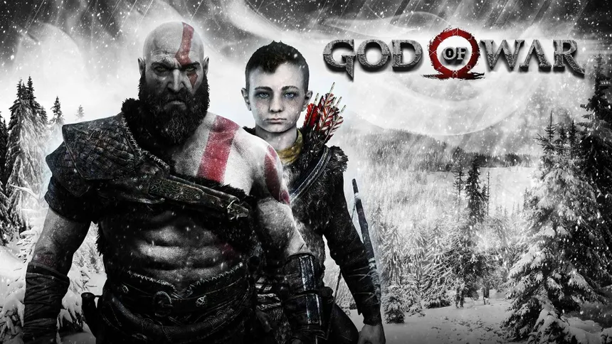
La saga God of War sigue la historia de Kratos, un guerrero espartano marcado por la tragedia, la venganza y su lucha contra los dioses. A lo largo de los juegos, su viaje evoluciona desde una historia de furia y destrucción en la mitología griega hasta una búsqueda más personal y reflexiva en el mundo nórdico.
La franquicia se divide en dos grandes etapas: la era griega, centrada en la venganza contra los dioses del Olimpo, y la era nórdica, donde Kratos intenta dejar atrás su pasado mientras enfrenta nuevos desafíos junto a su hijo.
Juegos principales
God of War Sons Of Sparta
God of War Ascension
God of War Betrayal
God of War (2005)
God of War II
God of War III
God of War: Ascension
God of War: Chains of Olympus
God of War: Ghost of Sparta
God of War (2018)
God of War Ragnarök
Etapas de la saga
Era Griega
La primera etapa de la saga se desarrolla en la mitología griega y sigue a Kratos en su camino de venganza contra Ares y posteriormente contra todo el Olimpo. Esta etapa está marcada por la violencia, la traición y la caída de los dioses.
Era Nórdica
En esta etapa, Kratos se traslada a tierras nórdicas y forma una nueva vida. La historia se centra en su relación con su hijo Atreus y en su intento de controlar su pasado mientras enfrenta nuevas deidades y profecías.
Protagonista
Kratos
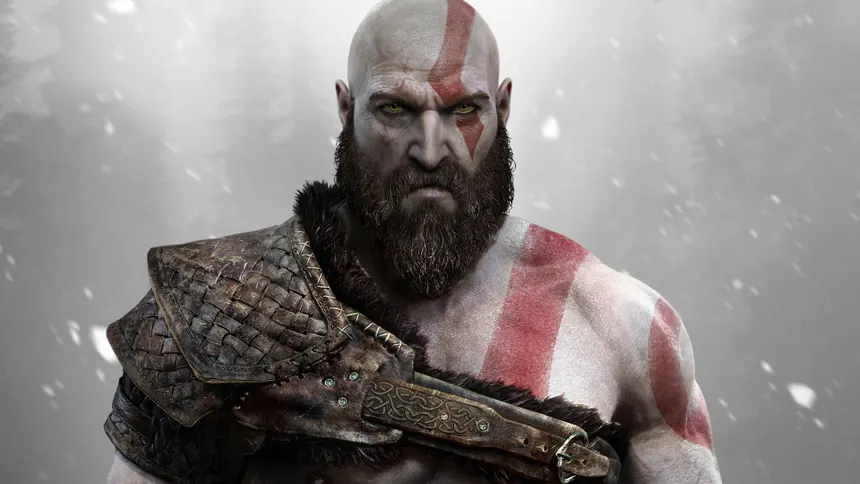
Kratos es el protagonista de toda la saga. Comienza como un general espartano consumido por la ambición y la desesperación, lo que lo lleva a hacer un pacto con Ares. Sin embargo, ese pacto desencadena una tragedia que define el resto de su vida.
A lo largo de los juegos, Kratos evoluciona de un guerrero impulsado por la venganza a una figura más compleja que busca redención y control sobre su propia naturaleza.
Temas principales
Venganza: Motor principal de la era griega.
Destino: Presente en toda la saga, especialmente con las profecías.
Familia: Clave en la etapa nórdica con Atreus.
Redención: El intento de Kratos de escapar de su pasado.
Mitologías
Mitología Griega
Incluye dioses como Zeus, Ares, Atenea y Hades, y escenarios como el Olimpo, el Inframundo y Atenas.
Mitología Nórdica
Introduce a dioses como Odín, Thor, Baldur y Freya, junto con reinos como Midgard, Asgard y Jotunheim.
Futuras secciones
En esta página se desarrollará la historia completa de cada juego de forma cronológica, junto con el análisis detallado de personajes, dioses y eventos clave de la saga.
God of War Sons of Sparta – Historia completa
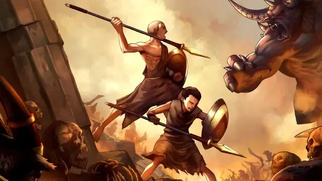
God of War Sons of Sparta nos lleva a los años de formación de Kratos, cuando todavía era un joven espartano bajo el severo entrenamiento de la Agoge. En esta etapa de su vida, él no era todavía el guerrero legendario que el mundo llegaría a temer, sino un cadete moldeado por la disciplina, el dolor y la presión constante de convertirse en algo más grande que sí mismo. Junto a su hermano Deimos, Kratos recorre una aventura que pone a prueba su cuerpo, su mente y sobre todo el vínculo que los une como hermanos de sangre y de armas.
La historia comienza en Esparta, donde el deber lo es todo y donde crecer significa soportar entrenamiento brutal, humillación, resistencia física y una educación basada en la dureza. Kratos ya muestra desde temprano el temperamento que lo definirá más adelante: silencio, responsabilidad, resistencia y una forma de entender el deber que no permite dudas. Deimos, más joven e intrépido, contrasta con él, pero ambos comparten la misma presión: convertirse en guerreros dignos de la ciudad que los formó.
Con el paso de los días, los hermanos aprenden a moverse, atacar y sobrevivir como espartanos. La lanza se vuelve una extensión natural de su cuerpo y el combate deja de ser una práctica para convertirse en una condición de vida. La violencia no aparece como una elección heroica, sino como parte de la educación que define a toda una generación. En ese contexto, Kratos se endurece no solo por necesidad, sino también por la obligación de proteger a Deimos y de estar a la altura de un destino que todavía no comprende del todo.
Capítulo 1 – La disciplina de la Agoge
Durante el entrenamiento, Kratos y Deimos son sometidos a pruebas que buscan quebrarlos antes de formarlos. La Agoge no solo mide fuerza física, también exige obediencia, control, paciencia y la capacidad de seguir adelante incluso cuando el cuerpo quiere rendirse. Cada ejercicio y cada castigo contribuyen a crear la rigidez emocional que luego definirá a Kratos como adulto.
Lo importante de esta etapa no es únicamente mostrar que Kratos se vuelve fuerte, sino explicar por qué su visión del mundo nace marcada por la disciplina militar. Para él, el deber no es una idea abstracta: es una forma de existir. Esa idea se profundiza porque su vida nunca estuvo separada de la guerra; la guerra fue la escuela que le enseñó a moverse, pensar y sobrevivir.
Deimos, por su parte, funciona como espejo y contraste. Mientras Kratos carga con la postura del hermano mayor responsable, Deimos conserva un espíritu más impulsivo, más inquieto y más dispuesto a mirar más allá de la rutina de la disciplina espartana. Esa diferencia vuelve más fuerte el vínculo entre ambos, porque uno protege y el otro desafía, pero los dos se necesitan para completar su identidad.
Capítulo 2 – El cadete desaparecido
La historia cambia de rumbo cuando un compañero cadete desaparece. Lo que podría parecer un incidente menor se convierte en una misión que saca a Kratos y Deimos de la seguridad relativa de Esparta y los obliga a internarse en la región de Laconia. El deber, que hasta entonces estaba atado al entrenamiento, se transforma en una obligación real: encontrar al espartano perdido y devolverlo con vida.
Este punto es fundamental porque marca el verdadero comienzo de la aventura. Kratos y Deimos no salen a buscar gloria ni venganza. Salen porque el código espartano lo exige y porque abandonar a un hermano de armas no es una opción. Desde ese momento, la historia deja de ser solamente sobre crecer y pasa a ser sobre asumir el costo de proteger a otros, incluso cuando el camino está lleno de amenazas desconocidas.
La búsqueda también le da al viaje un tono de descubrimiento. Laconia no es simplemente un territorio salvaje: es una tierra llena de secretos, rutas ocultas, ruinas, criaturas peligrosas y restos de algo más antiguo que la formación espartana. Lo que empieza como rescate se transforma en un descenso hacia un mundo donde el honor y la supervivencia se ponen a prueba de forma constante.
Capítulo 3 – Laconia, la tierra peligrosa
Al salir de Esparta, los hermanos se adentran en Laconia, una región hermosa y hostil a la vez. PlayStation la describe como una tierra repleta de peligros y misterios alrededor de los muros familiares de la ciudad, y esa idea se siente en cada paso del viaje. No es un simple campo de batalla: es un lugar donde la naturaleza, la mitología y la violencia conviven como si fueran parte del mismo orden.
A lo largo de esta travesía, Kratos y Deimos deben correr, saltar, trepar y abrirse paso por entornos deslumbrantes, pero también por espacios donde la amenaza puede aparecer en cualquier momento. La exploración no es decorativa; forma parte de la supervivencia. Cada secreto encontrado, cada tesoro escondido y cada desafío superado sirve para demostrar que el mundo exterior es mucho más amplio y peligroso que el entrenamiento dentro de Esparta.
La región de Laconia también funciona como un espejo del estado interno de Kratos. A medida que avanza, el joven guerrero deja ver una mezcla de disciplina, duda y necesidad de proteger. No actúa como un héroe mítico todavía, sino como un muchacho que está empezando a entender que la fortaleza sin propósito no alcanza. La aventura lo obliga a pensar no solo como soldado, sino como hermano.
Capítulo 4 – El significado del deber
Uno de los temas centrales de la historia es el deber. Kratos, con su carácter estoico y responsable, representa la obediencia madura; Deimos, con su energía y valentía, representa el impulso y la voluntad de actuar. Juntos convierten la misión en una prueba de hermandad, donde cada paso hacia adelante también es una afirmación de lo que significa ser espartano.
A diferencia de historias posteriores de la saga, aquí todavía no domina la venganza ni la destrucción del mundo. Lo que pesa es la formación moral. Los hermanos deben decidir si el deber es solo una orden o si también es una promesa entre ellos y hacia la comunidad que los formó. Esa tensión le da al viaje una carga emocional muy fuerte.
Cada combate y cada obstáculo los empuja a reconocer que el entrenamiento no sirve de nada si no existe un motivo para usarlo. Esa idea convierte a Sons of Sparta en una historia de madurez: Kratos está aprendiendo que ser fuerte no significa solamente sobrevivir, sino elegir a quién se protege y por qué.
Capítulo 5 – Pruebas, enemigos y tesoros ocultos
Mientras avanzan por Laconia, los hermanos se enfrentan a enemigos variados y a desafíos diseñados para quebrar su progreso. PlayStation destaca que el juego incluye una amplia variedad de enemigos, jefes espectaculares y acertijos que se integran con la exploración del entorno. Entre las criaturas anunciadas oficialmente se encuentran minotauros, sátiros y legionarios no muertos, además de nuevas criaturas de la mitología griega incorporadas por Mega Cat Studios.
Estas amenazas no están ahí solo para obstaculizar el avance. También sirven para mostrar cómo Kratos y Deimos están creciendo dentro de una tradición espartana que exige valentía frente a lo monstruoso. Cada enemigo vencido refuerza la idea de que el entrenamiento ya dejó de ser teoría y se volvió acción real.
Los escenarios también recompensan la exploración con tesoros, misiones opcionales y encuentros ocultos. Eso hace que la historia no se sienta lineal ni vacía: Laconia es un mundo vivo, cargado de rutas secundarias y secretos que reflejan el trabajo de los desarrolladores por darle peso real al viaje de los hermanos. La aventura no solo avanza; también se descubre.
Capítulo 6 – El hermano desaparecido, el hermano encontrado
El objetivo de rescatar al cadete desaparecido mantiene la historia en movimiento, pero también introduce un peso emocional silencioso. Kratos y Deimos no están persiguiendo un tesoro ni una gloria militar; están buscando a alguien que se perdió en un camino que podría terminar en tragedia. Esa búsqueda funciona como una prueba de lealtad, responsabilidad y valor.
Cuanto más se internan en Laconia, más claro se vuelve que el rescate no es un simple gesto de honor. Es una afirmación de identidad. Un espartano no abandona a otro espartano, y ese principio guía cada decisión de los hermanos. En esa búsqueda se empieza a construir el tipo de hombre que Kratos será más adelante: alguien que entiende el peso de la pérdida antes de que la tragedia lo consuma por completo.
La relación entre Kratos y Deimos es lo más importante del viaje. No es una relación idealizada; es una hermandad forjada bajo presión, donde el deber y el afecto se mezclan sin decirse de forma explícita. El juego utiliza esa dinámica para convertir una misión de rescate en una historia sobre crecer juntos en un mundo que exige dureza desde niños.
Capítulo 7 – La madurez de Kratos
PlayStation describe Sons of Sparta como una “historia sobre la madurez”, y esa idea se entiende mejor al mirar el viaje completo. Kratos no sale de la aventura igual que como entró. Empieza como un joven espartano disciplinado y termina con una conciencia más profunda de lo que significa el deber, la hermandad y la responsabilidad de cargar con el destino de otros.
El juego muestra cómo Kratos crece hasta convertirse en un poderoso guerrero espartano, pero ese crecimiento no es solo físico. También es emocional y moral. El deber deja de ser una frase aprendida en entrenamiento y pasa a ser una decisión personal. La fuerza ya no es solo una condición del cuerpo: es una obligación ética.
Ese cambio es esencial para toda la saga porque ayuda a explicar por qué Kratos, incluso en sus etapas más brutales, siempre conserva una idea rígida de lo que significa cumplir con una promesa. Sons of Sparta ilumina esa raíz temprana de su personalidad.
Capítulo final – Regreso a Esparta
Cuando la misión termina, Kratos y Deimos regresan con una comprensión más profunda de sí mismos y de su lugar dentro del mundo espartano. La historia no se presenta como una victoria simple, sino como una experiencia que deja huella en ambos hermanos y que fortalece el vínculo entre ellos.
Lo que comenzó como la búsqueda de un cadete desaparecido termina siendo una lección sobre el deber, la lealtad y el precio de crecer en una cultura donde el honor lo define todo. Kratos no solo demuestra que puede sobrevivir; demuestra que está dispuesto a cargar con la vida de otros, incluso cuando el camino exige entrar en territorios peligrosos y enfrentar la muerte si hace falta.
Por eso God of War Sons of Sparta encaja perfecto al inicio de tu cronología: muestra el nacimiento del Kratos guerrero, pero también el origen emocional del hombre que más tarde se convertirá en una leyenda marcada por la tragedia.
God of War Ascension – Historia completa
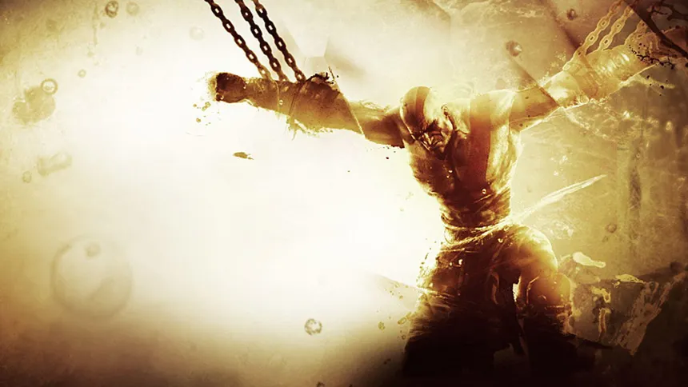
God of War Ascension muestra a Kratos en una etapa muy anterior a su guerra contra el Olimpo, cuando todavía estaba atado al peso de su pacto con Ares y arrastraba las consecuencias de haber cruzado una línea que ya no podía deshacer. Esta historia ocurre después de que Kratos rompe su juramento al dios de la guerra, lo que desata la persecución de las Furias, guardianas del castigo, la locura y el castigo eterno para los juramentos quebrados.
A diferencia de otras entregas, aquí Kratos no está movido por una venganza ya definida, sino por una lucha desesperada por recuperar su propia voluntad. El conflicto empieza con culpa, encierro y castigo, y se transforma poco a poco en un viaje de supervivencia mental y física donde el protagonista intenta demostrar que todavía puede ser dueño de su destino, incluso cuando todo el mundo lo considera culpable y condenado.
Capítulo 1 – La ruptura del juramento
La historia arranca con Kratos ya separado de Ares y cargando las consecuencias de haber roto el juramento que lo unía al dios. Ese acto no es gratuito: en el universo de God of War, un pacto con un dios no se rompe sin pagar un precio, y el precio llega en forma de las Furias, quienes persiguen al protagonista por haber traicionado su palabra.
Kratos está encerrado, física y mentalmente, en una situación donde la culpa se convierte en una prisión. No hay gloria en este punto de su vida. No hay aún la imagen legendaria del espartano convertido en destructor del Olimpo. Lo que hay es un hombre quebrado, perseguido por su pasado y obligado a resistir el castigo de fuerzas que actúan como jueces de una ley divina cruel e implacable.
Desde el principio, la historia deja claro que Ascension no se trata de conquistar algo, sino de escapar de una condena. Esa diferencia cambia todo el tono del juego: en lugar de una campaña de poder, lo que tenemos es una historia sobre presión, juicio y la necesidad de recuperar el control de la propia mente.
Capítulo 2 – La prisión y el mundo de los castigados
Kratos aparece atrapado en una prisión construida para quebrar a quienes han desobedecido a los dioses. Este lugar no funciona como una simple mazmorra, sino como una extensión del castigo divino. Cada pasillo, cada celda y cada estructura parecen diseñados para recordar a los prisioneros que la voluntad de los dioses está por encima de la de cualquier mortal.
La prisión se convierte en un símbolo perfecto de la mente de Kratos en ese momento de su vida. Todo está fragmentado, oscuro y lleno de amenazas. Cada paso que da implica la idea de salir de un encierro que no es únicamente físico. También debe liberarse de la culpa, del trauma y del poder que Ares todavía ejerce sobre su existencia.
Durante este tramo inicial, Kratos no actúa como un héroe seguro de sí mismo. Se mueve con rabia, dolor y una necesidad absoluta de sobrevivir. Su cuerpo sigue siendo una máquina de guerra, pero su espíritu está bajo asedio. Por eso esta etapa es tan importante: muestra a Kratos en el momento exacto en que su fuerza todavía no alcanza para borrar la herida emocional que lo persigue.
Capítulo 3 – Orkos y la verdad del castigo
En medio de esa persecución aparece Orkos, una figura clave en la historia. Él no es un enemigo como los demás, sino alguien que conoce la verdad detrás de la condena de Kratos y de la estructura de poder que lo rodea. Orkos funciona como guía, aliado y también como recordatorio de que el sufrimiento de Kratos tiene raíces mucho más profundas que un simple castigo por desobedecer.
A través de Orkos, Kratos empieza a comprender que las Furias no solo están ahí para torturarlo, sino para mantenerlo unido a un sistema de control basado en los juramentos, la obediencia y la manipulación de la voluntad. La idea de libertad aparece entonces como algo terriblemente costoso, porque romper la cadena implica enfrentar a quienes viven de sostenerla.
Orkos también aporta una dimensión trágica a la historia. Su relación con Kratos no es fría ni distante; al contrario, termina convirtiéndose en una parte esencial del sacrificio final que define la etapa. Su existencia está unida a la pregunta central del juego: ¿cuánto debe perder Kratos para quedar realmente libre?
Capítulo 4 – Las Furias: Alecto, Megaera y Tisífone
Las antagonistas principales de Ascension son las Furias, una tríada de seres divinos dedicados a castigar juramentos rotos y preservar el orden a través del dolor. Cada una tiene su propia presencia y su propia forma de atacar, pero juntas forman una maquinaria de tortura diseñada para quebrar la voluntad de los condenados.
Alecto lidera la persecución con una presencia dominante y brutal. Megaera aporta crueldad, manipulación y una capacidad inquietante para convertir el castigo en un acto casi ritual. Tisífone representa el lado más oscuro de la locura y la condena, reforzando el tono de horror psicológico que caracteriza a esta entrega.
Lo que hace tan fuertes a las Furias no es solo su poder de combate, sino su rol simbólico. Ellas encarnan el castigo eterno, la vigilancia absoluta y la idea de que una promesa rota puede perseguir a una persona hasta destruirla. Para Kratos, enfrentarlas no es solamente una batalla; es una forma de poner a prueba si todavía merece conservar su humanidad.
Cada encuentro con ellas aumenta la sensación de opresión. No importa cuánto avance Kratos: siempre parece estar cayendo más profundo dentro de una estructura que lo supera. Esa tensión constante hace que Ascension se sienta como una batalla entre la voluntad individual y un sistema divino que castiga cualquier intento de independencia.
Capítulo 5 – El viaje hacia la libertad
A medida que avanza, Kratos atraviesa escenarios que lo alejan de la prisión inicial y lo empujan por rutas cada vez más peligrosas. La historia lo lleva a costas, ruinas, fortalezas, pasajes subterráneos y lugares donde la presencia de los dioses se siente en cada piedra. El entorno deja de ser un simple fondo y pasa a convertirse en parte de la prueba.
La estructura del viaje refuerza la idea de que Kratos está saliendo de una realidad cerrada y entrando en otra donde el castigo sigue presente, pero ya no tiene la forma de una celda. Ahora la amenaza está en el mundo mismo, en los monstruos, en las trampas y en la vigilancia constante de las Furias.
En esta etapa, Kratos ya no se mueve únicamente para sobrevivir. También empieza a buscar una forma de cortar su vínculo con el juramento que lo destruye desde dentro. Esa búsqueda es la base moral de todo el juego, porque si logra liberarse, podrá recuperar al menos una parte de sí mismo que todavía está atrapada en la culpa.
Capítulo 6 – La locura como arma
Uno de los elementos más fuertes de Ascension es cómo utiliza la locura como parte de la historia. Kratos no solo pelea contra enemigos físicos: también se enfrenta a alucinaciones, distorsiones y visiones que hacen que su realidad sea cada vez más inestable. La influencia de las Furias no es solo corporal, sino psicológica.
Esto hace que el viaje sea mucho más íntimo que otros episodios de la saga. Kratos está constantemente al borde de romperse, y el jugador siente ese desgaste porque el juego lo lleva a experimentar un mundo donde nada está del todo bajo control. La mente de Kratos es tan importante como su espada.
En ese sentido, Ascension funciona como una historia sobre cómo el trauma puede volverse una prisión aún peor que cualquier muro físico. Kratos no está simplemente atrapado por cadenas; está atrapado por la memoria de lo que hizo, por lo que perdió y por el castigo que continúa consumiéndolo.
Capítulo 7 – El juicio final
Con el avance de la historia, Kratos llega al corazón del conflicto y queda frente a frente con las Furias en un enfrentamiento definitivo. La lucha final no solo busca derrotarlas en combate, sino romper el sistema que las sostiene. Es la diferencia entre destruir a un enemigo y destruir la idea misma de que ese enemigo tiene derecho a gobernar tu vida.
El peso de este tramo final viene de la manera en que se revelan las verdades detrás del castigo. Kratos descubre que no está siendo perseguido por simple crueldad; está siendo sometido a una maquinaria de control diseñada para impedir que quienes rompen juramentos escapen de la condena. Pero en lugar de someterse, Kratos decide ir hasta el final.
El combate culmina con un tono muy trágico, porque la victoria no llega sin pérdidas. En una historia donde todo gira alrededor del castigo y la culpa, la libertad solo puede alcanzarse mediante sacrificios. Ese es el precio real de romper con los dioses: perder algo fundamental para quedarse en pie como persona.
Capítulo final – Kratos se libera
Al final de Ascension, Kratos logra romper el dominio de las Furias y dejar atrás la cadena que lo ataba a su juramento roto. No sale limpio ni completamente sanado, pero sí con una conclusión vital: ya no está subordinado a la voluntad de Ares ni al sistema que intentó destruirlo desde dentro.
La libertad que consigue no es una paz verdadera. Es apenas el comienzo de su camino hacia algo mucho más grande y mucho más oscuro. Pero ese detalle es importante porque marca el inicio de una transformación profunda: Kratos ya no es solo un hombre castigado, sino un hombre que ha demostrado que puede resistir incluso a los dioses que quieren reducirlo a obediencia.
Por eso God of War Ascension es tan importante dentro de la cronología: no solo explica una parte temprana de la vida de Kratos, sino que también muestra el momento exacto en que empieza a separarse de toda autoridad divina que pretenda poseerlo. Es el primer gran paso hacia el guerrero que más adelante desafiará al Olimpo completo.
God of War: Chains of Olympus – Historia completa
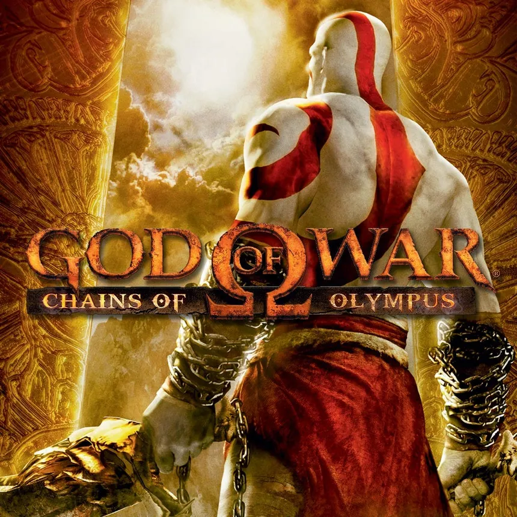
God of War: Chains of Olympus ocurre antes del primer God of War y muestra a Kratos en un momento en el que todavía sirve a los dioses del Olimpo como su guerrero más brutal y eficaz. Aunque ya arrastra el peso de su pasado, todavía no ha llegado al punto de ruptura total que lo llevará a desafiar abiertamente al Olimpo. En esta etapa, Kratos sigue obedeciendo, pero lo hace más por condena y cansancio que por fe real en quienes lo gobiernan.
La historia se desarrolla durante los años en los que Kratos ha sido utilizado como arma de los dioses para resolver amenazas que ellos mismos no pueden contener. Esa condición lo convierte en un instrumento útil, pero también en un hombre cada vez más vacío, cargando con recuerdos que no desaparecen. A diferencia de otras entregas de la saga, aquí el conflicto no empieza con una guerra total, sino con una cadena de decisiones pequeñas que terminan abriendo la puerta a una tragedia mucho más grande.
Capítulo 1 – El servicio a los dioses
La historia empieza con Kratos ya instalado en una rutina de servicio forzado al Olimpo. Ha pasado años resolviendo problemas para los dioses, destruyendo monstruos, recuperando artefactos y obedeciendo órdenes que rara vez le traen paz. La guerra ya es parte de su naturaleza, pero el juego deja claro que su mente no está en equilibrio. Kratos todavía vive perseguido por la pérdida de su familia y por el hecho de que, aunque haya sobrevivido, no ha logrado escapar del dolor.
En este punto, el protagonista ya no es un soldado ingenuo. Sabe perfectamente que los dioses no lo tratan como a una persona, sino como a una herramienta sacrificable. Aun así, sigue avanzando porque su vida entera quedó atrapada dentro de un pacto con el mundo divino. Esa tensión entre obediencia y resentimiento marca todo el tono de la historia.
Desde el comienzo, el viaje tiene un aire melancólico. Kratos no está buscando gloria ni riqueza. Está cumpliendo una función, y esa función lo lleva a lugares donde el mundo humano se mezcla con lo sobrenatural, los sueños, la muerte y la voluntad de los dioses.
Capítulo 2 – El eclipse y la caída del orden
Uno de los elementos centrales de la historia es la aparición de un eclipse que altera la estabilidad del mundo. El sol desaparece y con él se desordena el equilibrio que sostiene la realidad. En la mitología de God of War, ese tipo de eventos no son simples fenómenos celestes: son síntomas de que las fuerzas divinas están perdiendo control sobre algo esencial.
Kratos es enviado a investigar el problema, y pronto descubre que la situación está mucho más conectada con las deidades de lo que parecía. El eclipse no es solamente una amenaza ambiental, sino una señal de que alguien está manipulando la estructura del mundo desde un plano superior. Esa idea convierte la misión en algo más que una simple búsqueda: ahora hay que entender quién está moviendo los hilos y por qué.
El viaje a través de este caos visual y simbólico también refuerza un rasgo clave del personaje. Kratos no necesita comprender todo para seguir adelante. Donde otros se detendrían a interpretar la señal, él avanza porque su entrenamiento y su naturaleza lo empujan a resolver el problema por la fuerza.
Capítulo 3 – La ciudad de Ática
La historia lleva a Kratos a Ática, una ciudad asediada por fuerzas monstruosas y por el caos que acompaña al eclipse. Este lugar funciona como una de las primeras pruebas importantes del juego porque muestra que la amenaza no se limita al plano divino: también afecta directamente a la gente común y al mundo humano.
Kratos avanza por las ruinas, combate soldados y criaturas, y empieza a sentir que el mundo entero está siendo empujado hacia una catástrofe mayor. Ática no solo sirve como escenario de combate, sino como ejemplo de la fragilidad del orden humano cuando los dioses intervienen sin control.
El recorrido por esta ciudad ayuda a construir la atmósfera de la historia. Las calles destruidas, los templos en ruinas y la sensación constante de ataque hacen que el jugador sienta que el conflicto tiene una escala más amplia que la de una misión individual. Kratos está atravesando un mundo que se deshace mientras intenta llegar a la verdad.
Capítulo 4 – Helios desaparece
La búsqueda de respuestas lleva a uno de los giros más importantes de la historia: Helios, el dios del sol, ha desaparecido. Su ausencia no es un detalle menor, porque Helios es una pieza clave para mantener el equilibrio del mundo. Sin él, la oscuridad y el eclipse ganan terreno y la estabilidad del planeta comienza a desmoronarse.
Kratos descubre que la desaparición de Helios está directamente conectada con los planes de Persephone y Atlas. El conflicto ya no es solo un misterio celestial, sino una operación cuidadosamente planeada para alterar la estructura del mundo y utilizar el poder divino como herramienta de destrucción.
Este punto es importante porque le da a la historia una dirección clara: Kratos no está simplemente rescatando a una deidad. Está intentando impedir que el orden del universo se rompa por completo. Y como siempre ocurre en su vida, el peso de la misión termina siendo mucho más grande que él mismo.
Capítulo 5 – El encuentro con Caronte y el inframundo
A medida que la historia avanza, Kratos se ve arrastrado hacia regiones cada vez más oscuras, incluyendo el mundo de los muertos. El Inframundo vuelve a presentarse como un lugar de castigo, dolor y memoria, un espacio que Kratos conoce demasiado bien por todo lo que ha perdido a lo largo de su vida.
La presencia de Caronte aporta una capa adicional al tono de la historia. Él no solo funciona como guardián o enemigo, sino como figura que representa el tránsito entre la vida y la muerte. En un universo donde Kratos siempre parece moverse al borde de ambos estados, ese tipo de encuentro tiene un peso especial.
El paso por el Inframundo refuerza la sensación de que Kratos nunca está completamente libre. Incluso cuando parece avanzar, el mundo lo empuja de regreso a sus traumas, a la muerte de los que amó y a la culpa que carga desde que destruyó su propia vida.
Capítulo 6 – Persephone y Atlas
La verdadera amenaza detrás del eclipse se revela en la figura de Persephone, quien quiere utilizar la situación para destruir el mundo y vengarse del sistema divino que la ha encerrado en su propio destino. Junto a ella aparece Atlas, uno de los titanes más poderosos, cuya existencia está ligada al peso literal y simbólico del mundo.
Persephone no ve el mundo como un lugar que deba ser salvado. Lo ve como una jaula. Su intención de destruirlo convierte el conflicto en una lucha entre quien quiere sostener el orden y quien quiere romperlo de raíz. Atlas, por su parte, aporta una fuerza colosal que hace que la misión de Kratos se sienta todavía más desesperada.
El juego convierte esta parte de la historia en una prueba de voluntad. Kratos ya no se enfrenta solo a monstruos o soldados, sino a una amenaza que puede arrastrar al mundo entero a la ruina si no se detiene a tiempo.
Capítulo 7 – El recuerdo de Calíope
Uno de los momentos más emocionales de Chains of Olympus está ligado a Calíope, la hija de Kratos. La historia vuelve a tocar el vínculo entre padre e hija para recordarle al protagonista lo que perdió y lo que jamás pudo recuperar. Esa memoria no funciona solo como dolor, sino también como tentación: una posibilidad de descanso, de reencuentro y de escapar del castigo eterno.
Esta parte del juego es crucial porque Kratos se enfrenta a una elección interna. Puede buscar la paz personal o puede seguir cumpliendo el papel que los dioses esperan de él. En un universo donde casi todo se resuelve por violencia, este momento detiene la acción para mostrar el costo humano de su existencia.
La figura de Calíope hace que el viaje no sea solo una misión para salvar el mundo. También es una prueba de resistencia emocional frente a la idea de que quizá la única forma de dejar de sufrir sea abandonar todo. Kratos, sin embargo, todavía no está dispuesto a hacerlo.
Capítulo 8 – El sacrificio imposible
A medida que se acerca el final, Kratos entiende que resolver el problema no será gratis. Cada paso hacia la restauración del orden implica dejar atrás algo importante. El juego construye ese sacrificio con un tono cada vez más trágico, porque el protagonista debe decidir entre seguir su deseo personal o sostener la estabilidad del mundo.
En esta etapa queda claro que la grandeza de Kratos no viene de ganar con facilidad, sino de cargar con decisiones imposibles. Él no recibe una recompensa por obedecer. Recibe más sufrimiento. Pero aun así continúa, porque su forma de existir está atada a esa idea de resistencia absoluta.
La lucha final concentra toda la tensión acumulada desde el eclipse, la desaparición de Helios, el descenso al Inframundo y la intervención de las deidades rebeldes. Kratos sigue adelante aunque el mundo parezca inclinarse cada vez más hacia la destrucción.
Capítulo final – El regreso de la luz
Al final de Chains of Olympus, Kratos logra impedir que el plan de Persephone destruya el mundo y restaura el equilibrio que Helios debía sostener. El sol vuelve a ocupar su lugar y el orden del mundo queda salvado, aunque el costo emocional para Kratos vuelve a ser enorme.
La victoria no se siente como una celebración. Se siente como otra cicatriz en una vida que ya está llena de ellas. Kratos cumple con su deber una vez más, pero no encuentra paz. Solo confirma que, para él, servir a los dioses significa seguir perdiendo partes de sí mismo sin obtener una verdadera redención.
Por eso God of War: Chains of Olympus es tan importante dentro de la cronología: muestra a Kratos antes de su gran ruptura, cuando todavía responde al Olimpo, pero ya empieza a dejar claro que su alma no pertenece a los dioses. Es una historia sobre el deber, la pérdida y el precio de seguir adelante en un mundo gobernado por fuerzas que nunca entienden el dolor humano.
God of War (2005) – Historia completa
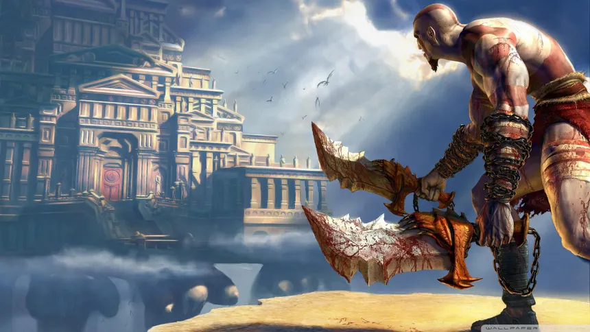
God of War (2005) marca el punto de inflexión definitivo en la vida de Kratos. Después de años sirviendo a los dioses del Olimpo y cumpliendo misiones imposibles, su historia deja de ser la de un siervo atormentado para convertirse en la de un hombre consumido por la venganza. Este es el momento donde nace verdaderamente la leyenda del Fantasma de Esparta.
La historia gira en torno a un objetivo claro: matar a Ares, el dios de la guerra. Pero detrás de esa misión se esconde algo mucho más profundo: el deseo de Kratos de liberarse del tormento de sus recuerdos, de la culpa por la muerte de su familia y de la manipulación divina que lo llevó a convertirse en lo que es.
Capítulo 1 – El salto al vacío (Mar Egeo)
La historia comienza en medio de una tormenta en el Mar Egeo. Kratos, completamente agotado y sin esperanza, decide terminar con su vida arrojándose desde un acantilado. Este momento no es solo una escena impactante, sino una declaración del estado mental del personaje: está roto, consumido por el pasado y sin encontrar un propósito para seguir viviendo.
Antes de que su cuerpo toque el agua, la historia retrocede en el tiempo. El juego nos lleva tres semanas atrás, al inicio de los eventos que lo llevarán a ese momento extremo. Este recurso narrativo marca desde el principio que todo lo que veremos es el camino hacia esa caída.
Capítulo 2 – El Hydra (Mar Egeo)
Kratos se encuentra a bordo de un barco en medio de una batalla contra la Hydra, una criatura gigantesca que amenaza con destruir toda la flota. Esta misión representa perfectamente el rol que Kratos cumple en ese momento: es un arma de los dioses, enviado a enfrentar amenazas imposibles sin cuestionar el porqué.
El combate contra la Hydra es brutal y caótico. Kratos avanza entre marineros muertos, cubiertas destruidas y cabezas del monstruo que emergen una tras otra. Finalmente, tras una lucha intensa, logra derrotarla clavando un mástil en su cabeza principal, demostrando su fuerza y determinación.
Este enfrentamiento no solo establece el tono del juego, sino que también refuerza la idea de que Kratos es capaz de enfrentarse a criaturas que ningún humano podría vencer.
Capítulo 3 – Atenas bajo asedio
Tras la batalla, Kratos recibe una nueva misión de los dioses: viajar a Atenas, que está siendo destruida por Ares. El dios de la guerra ha decidido atacar la ciudad, desafiando el equilibrio del Olimpo y sembrando el caos entre mortales e inmortales.
Kratos llega a una ciudad en ruinas, llena de fuego, destrucción y desesperación. Los ciudadanos huyen mientras criaturas y soldados devastan todo a su paso. Aquí, el jugador comienza a sentir la magnitud del poder de Ares y el nivel de destrucción que es capaz de causar.
En medio del caos, Atenea le encomienda a Kratos una tarea imposible: encontrar la Caja de Pandora, el único objeto capaz de otorgarle el poder necesario para derrotar a un dios.
Capítulo 4 – El Templo de Pandora (Desierto de las Almas Perdidas)
Kratos se dirige al Desierto de las Almas Perdidas, un lugar inhóspito donde el tiempo y la realidad parecen distorsionarse. Allí encuentra el Templo de Pandora, una estructura gigantesca construida sobre el lomo de Cronos, el titán condenado a cargar eternamente con su peso.
El templo no es un simple edificio, sino una prueba diseñada para destruir a cualquiera que intente atravesarlo. Trampas, acertijos y criaturas letales protegen el camino hacia la Caja de Pandora. Cada sala representa un desafío físico y mental que pone a prueba la resistencia de Kratos.
A medida que avanza, la sensación de aislamiento crece. Kratos está completamente solo, enfrentando un lugar donde incluso el tiempo parece jugar en su contra.
Capítulo 5 – El pasado revelado
Durante su travesía por el templo, Kratos comienza a recordar su pasado. Años atrás, siendo un general espartano, se vio acorralado en batalla y decidió invocar a Ares para salvar su vida y la de sus hombres. A cambio, juró servir al dios de la guerra.
Ares aceptó el pacto y le otorgó las Espadas del Caos, armas que quedaron unidas a su carne como símbolo de su servidumbre. Pero el verdadero horror llegó después: manipulado por Ares, Kratos fue engañado para matar a su propia esposa y a su hija.
Este momento define completamente al personaje. La ceniza de su familia queda adherida a su piel, dándole el aspecto que lo convertirá en el Fantasma de Esparta. Desde ese instante, su vida queda marcada por la culpa y la sed de venganza.
Capítulo 6 – La Caja de Pandora
Tras superar innumerables pruebas, Kratos finalmente alcanza la Caja de Pandora. Este objeto legendario contiene un poder capaz de igualar a los dioses, algo que ningún mortal debería poseer.
Sin embargo, en el momento en que logra obtenerla, Ares interviene directamente. Desde la distancia, el dios lanza un ataque que atraviesa a Kratos, matándolo instantáneamente y enviándolo al Inframundo.
Este giro refuerza la idea de que, incluso al borde de la victoria, Kratos sigue siendo inferior frente a un dios… al menos en ese momento.
Capítulo 7 – El Inframundo y el regreso
Kratos cae en el Inframundo, rodeado de almas condenadas y estructuras imposibles. Pero incluso en la muerte, se niega a aceptar su destino. Escala, lucha y se abre camino hacia la superficie, impulsado por su odio y su determinación.
Este tramo simboliza algo clave: Kratos no es un simple mortal. Su voluntad es tan fuerte que ni siquiera la muerte puede detenerlo.
Finalmente, logra regresar al mundo de los vivos, decidido a terminar lo que empezó.
Capítulo 8 – La batalla contra Ares (Atenas)
De vuelta en Atenas, Kratos abre la Caja de Pandora y obtiene el poder necesario para enfrentar a Ares. La batalla final es brutal y simbólica: no es solo un enfrentamiento físico, sino una confrontación con todo lo que el dios representa en su vida.
Ares intenta quebrarlo emocionalmente, llevándolo a una ilusión donde debe proteger a su familia. Este momento pone a prueba algo que Kratos había perdido: su capacidad de proteger en lugar de destruir.
Al superar esa prueba, Kratos logra finalmente derrotar a Ares, cumpliendo su objetivo de venganza.
Capítulo final – El nuevo Dios de la Guerra
Tras la muerte de Ares, Kratos espera encontrar paz. Sin embargo, los dioses se niegan a liberarlo del peso de sus recuerdos. Aunque le perdonan sus pecados, no eliminan su dolor.
Desesperado, Kratos vuelve al acantilado donde intentó quitarse la vida. Esta vez, cuando salta, Atenea lo salva y le ofrece un nuevo propósito: ocupar el lugar de Ares como el nuevo Dios de la Guerra.
Kratos acepta, no como un acto de redención, sino como una continuación de su existencia marcada por la guerra. Se sienta en el trono del Olimpo, no como un salvador, sino como un dios nacido del dolor, la violencia y la pérdida.
Así termina God of War (2005), estableciendo el comienzo de la guerra contra el Olimpo y dejando claro que la historia de Kratos está lejos de terminar.
God of War: Betrayal – Historia completa
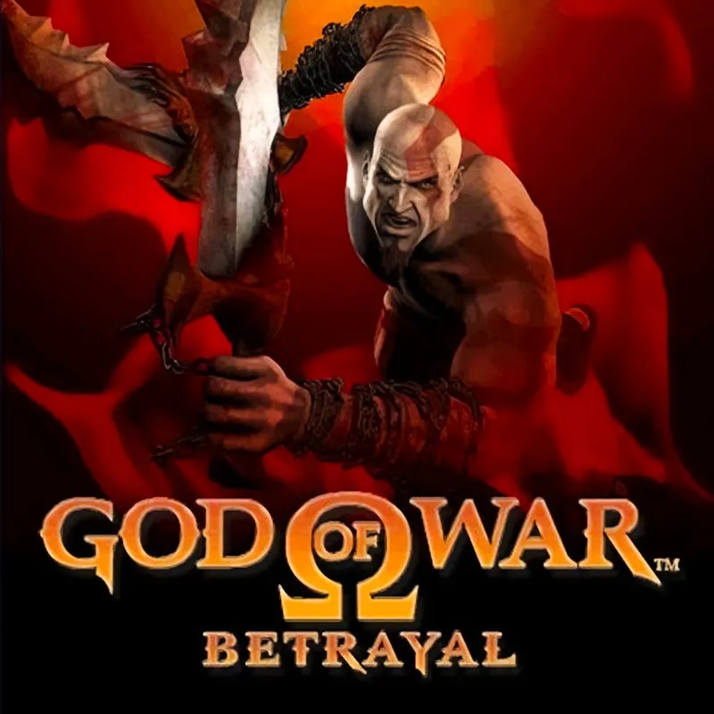
God of War: Betrayal transcurre después de los eventos de God of War (2005), cuando Kratos ya ha tomado el lugar de Ares como el nuevo Dios de la Guerra. Aunque ha alcanzado el poder que tanto buscaba, su mente sigue marcada por el dolor, la culpa y la desconfianza hacia los dioses del Olimpo. Lejos de encontrar paz, su ascenso lo coloca en una posición aún más peligrosa.
En esta etapa, Kratos no es un héroe ni un salvador. Es un dios temido, cuya forma de gobernar está marcada por la brutalidad. Su influencia sobre los espartanos crece, y su deseo de guerra constante empieza a incomodar a los demás dioses. Este es el inicio de un conflicto que no se basa en monstruos o titanes, sino en la desconfianza y la política divina.
Capítulo 1 – El nuevo Dios de la Guerra
Tras la caída de Ares, Kratos ocupa su lugar en el Olimpo. Sin embargo, no adopta el rol de un dios equilibrado. En lugar de mantener el orden, impulsa la guerra con más intensidad que su predecesor. Bajo su mando, Esparta se fortalece y expande su dominio, convirtiéndose en una fuerza imparable.
Los demás dioses observan con preocupación. Kratos no sigue las reglas no escritas del Olimpo. No busca equilibrio, no respeta límites y no muestra lealtad real hacia quienes le dieron su posición. Para ellos, ya no es solo un reemplazo de Ares: es una amenaza.
Este contexto establece el tono de la historia. Kratos ha alcanzado el poder máximo, pero ese poder no lo acerca a los dioses, sino que lo aleja aún más de ellos.
Capítulo 2 – La misión y el asesinato
La historia toma forma cuando Kratos es enviado a cumplir una misión, como tantas otras. Sin embargo, durante el desarrollo de esta tarea ocurre un evento inesperado: un aliado cercano cae asesinado en circunstancias extrañas.
El problema no es solo la muerte, sino la forma en que ocurre. Todo apunta a que Kratos es el responsable. Las pruebas lo señalan, las sospechas crecen y el Olimpo comienza a ver en él a un dios fuera de control, capaz de atacar incluso a sus propios aliados.
Para Kratos, esto no es solo una acusación. Es una traición. Alguien está manipulando los hechos para convertirlo en un enemigo dentro del mismo sistema que lo creó. Este giro cambia completamente el enfoque de la historia: ya no se trata de cumplir órdenes, sino de descubrir quién está detrás de la conspiración.
Capítulo 3 – La persecución
Tras el asesinato, Kratos pasa de ser ejecutor a ser perseguido. Las fuerzas del Olimpo comienzan a moverse en su contra, y la confianza que alguna vez existió desaparece por completo. La figura del Dios de la Guerra empieza a ser vista como un elemento inestable que debe ser controlado o eliminado.
Este cambio es clave porque anticipa lo que vendrá en God of War II. Kratos ya no forma parte del sistema: está siendo empujado fuera de él. La tensión política se convierte en una persecución abierta, donde cada paso que da lo aleja más de cualquier posibilidad de reconciliación con los dioses.
A pesar de esto, Kratos no se esconde. En lugar de huir, avanza. Su forma de enfrentar la traición no es la evasión, sino la confrontación directa. Quiere respuestas, y está dispuesto a destruir todo lo que se interponga en su camino para obtenerlas.
Capítulo 4 – La conspiración
A medida que investiga, Kratos descubre que el asesinato no fue un accidente ni un acto impulsivo. Fue parte de un plan más grande para desacreditarlo y justificar una acción en su contra. Aunque la historia no revela todos los detalles de forma explícita, queda claro que el Olimpo ya no lo considera un aliado confiable.
La conspiración funciona como una excusa perfecta para avanzar hacia un conflicto mayor. Kratos, que ya era visto con desconfianza, ahora tiene una marca definitiva: la de traidor. Esto rompe cualquier posibilidad de equilibrio entre él y los demás dioses.
En este punto, la historia deja de ser una simple intriga y se convierte en una cuenta regresiva hacia una guerra inevitable. Kratos no va a aceptar ser juzgado ni controlado. Y los dioses no están dispuestos a dejarlo actuar libremente.
Capítulo 5 – El nacimiento del conflicto
El final de Betrayal no presenta una resolución completa, sino una transición. Kratos no logra limpiar completamente su nombre ni restablecer la confianza con el Olimpo. En cambio, queda en una posición de enfrentamiento latente.
Este momento es crucial dentro de la cronología porque establece el tono de lo que vendrá. La relación entre Kratos y los dioses está rota. Ya no hay obediencia real, solo tensión, resentimiento y una guerra que todavía no ha comenzado, pero que parece inevitable.
Kratos, fiel a su naturaleza, no busca reconciliación. Si el Olimpo lo ve como un enemigo, entonces actuará como tal. Este pensamiento es el que lo llevará directamente a los eventos de God of War II, donde el conflicto finalmente explotará sin vuelta atrás.
Capítulo final – El camino hacia la guerra
Al finalizar la historia, Kratos permanece como Dios de la Guerra, pero completamente aislado del resto del Olimpo. Su poder sigue intacto, pero su posición es cada vez más inestable. La traición, real o fabricada, ha dejado una marca imposible de borrar.
Este cierre funciona como un puente directo hacia la siguiente etapa de la saga. Todo lo que ocurre en Betrayal prepara el terreno para la caída de Kratos como dios y su transformación definitiva en enemigo de Zeus y del Olimpo.
Así, God of War: Betrayal se convierte en una pieza clave dentro de la historia: no por su escala, sino por lo que representa. Es el momento exacto en el que la confianza se rompe, la política divina entra en juego y la guerra deja de ser una posibilidad para convertirse en un destino inevitable.
God of War: Ghost of Sparta – Historia completa
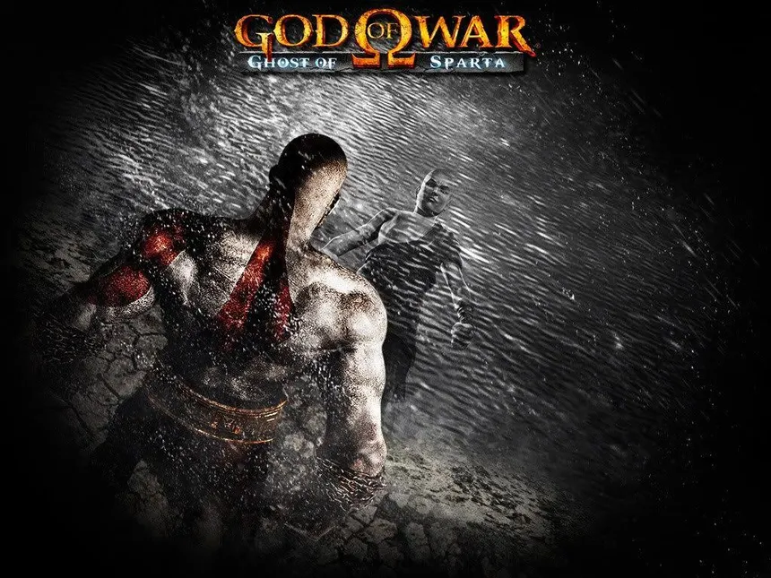
God of War: Ghost of Sparta ocurre después de los eventos de God of War (2005), cuando Kratos ya se ha convertido en el nuevo Dios de la Guerra. A pesar de haber alcanzado el poder que buscaba, su mente sigue atormentada por visiones de su pasado, especialmente de su infancia en Esparta y de su hermano Deimos.
Esta historia es una de las más personales de toda la saga, porque no gira alrededor de dioses o guerras, sino de la identidad de Kratos, su familia y las heridas que nunca logró cerrar. Es el momento donde el Fantasma de Esparta deja de mirar solo hacia adelante y empieza a enfrentarse a lo que dejó atrás.
Capítulo 1 – Visiones del pasado (Esparta)
La historia comienza con Kratos en el Olimpo, incapaz de encontrar paz incluso después de convertirse en un dios. Las visiones lo atormentan constantemente: recuerdos de su infancia, de su entrenamiento espartano y, sobre todo, de su hermano Deimos.
Estas visiones no son simples recuerdos. Son fragmentos de un pasado que Kratos nunca terminó de entender completamente. En ellas aparece el momento en que Deimos fue arrebatado, un evento que marcó profundamente la vida del protagonista y que ahora regresa con más fuerza que nunca.
Incapaz de ignorarlas, Kratos decide viajar a Esparta, buscando respuestas sobre su pasado y sobre el destino de su hermano. Este viaje no es una misión divina, sino una búsqueda personal.
Capítulo 2 – El regreso a Esparta
Al llegar a Esparta, Kratos se reencuentra con su hogar, un lugar que ya no le resulta familiar. Aunque ahora es un dios, su presencia no trae consuelo ni orgullo, sino una sensación de distancia. Esparta sigue siendo fuerte, pero Kratos ya no pertenece completamente a ese mundo.
Allí se encuentra con su madre, quien guarda la verdad sobre lo ocurrido con Deimos. Sin embargo, antes de poder revelar completamente lo sucedido, sufre una transformación terrible como castigo por intentar desafiar el destino impuesto por los dioses.
Este momento refuerza una idea central en la saga: los dioses no solo controlan el mundo, también controlan la información, el destino y las vidas de quienes intentan escapar de su voluntad.
Capítulo 3 – El origen del Fantasma de Esparta
A través de los recuerdos, se revela la verdad: cuando Kratos y Deimos eran niños, fueron entrenados como espartanos. Durante ese tiempo, Ares y Atenea intervinieron, buscando a un niño marcado por una profecía que anunciaba la caída del Olimpo.
Confundiendo a Deimos con ese niño, lo capturaron y lo llevaron lejos, condenándolo a un destino de sufrimiento. Kratos intentó detenerlos, pero fue incapaz de salvar a su hermano. Ese fracaso se convirtió en una herida que nunca sanó.
Este evento no solo explica el trauma de Kratos, sino también el origen de su apodo: el Fantasma de Esparta, un nombre ligado tanto a la ceniza de su familia como a las sombras de su pasado.
Capítulo 4 – El viaje a Atlantis
Siguiendo las pistas sobre Deimos, Kratos viaja a Atlantis, una ciudad marcada por el poder de los dioses y por fuerzas que escapan al control humano. Este lugar introduce una nueva escala en la historia, mostrando que la búsqueda personal de Kratos lo está llevando a territorios cada vez más peligrosos.
Atlantis no es solo un escenario, sino un símbolo del poder divino descontrolado. La ciudad sufre destrucción masiva a medida que Kratos avanza, reforzando la idea de que su presencia siempre está ligada al caos.
Durante esta etapa, el protagonista enfrenta enemigos, criaturas y desafíos que ponen a prueba su resistencia, mientras su objetivo sigue siendo claro: encontrar a Deimos.
Capítulo 5 – Thanatos y el dominio de la muerte
La búsqueda lleva a Kratos al dominio de Thanatos, el dios primordial de la muerte. Este lugar es uno de los más oscuros de la saga, un espacio donde el sufrimiento y la desesperación son constantes.
Allí, finalmente, Kratos encuentra a Deimos, pero el reencuentro no es lo que esperaba. Su hermano ha sido moldeado por años de tortura y odio, y no ve a Kratos como un salvador, sino como alguien que lo abandonó.
Este encuentro es uno de los momentos más intensos de la historia. No hay alivio ni reconciliación inmediata, solo dolor acumulado y una relación rota por el tiempo y el sufrimiento.
Capítulo 6 – Hermanos en conflicto
Deimos, consumido por la ira, ataca a Kratos. Este enfrentamiento no es una simple pelea, sino una liberación de todo el resentimiento que ha acumulado durante años. Para él, Kratos no es un héroe, sino alguien que falló cuando más lo necesitaba.
Kratos, por su parte, no busca destruirlo. Intenta resistir, comprender y finalmente reconciliarse. Este momento muestra una faceta diferente del personaje, una en la que no actúa solo por violencia, sino por la necesidad de reparar algo que rompió hace mucho tiempo.
Eventualmente, los hermanos logran dejar atrás el conflicto y se unen para enfrentar a Thanatos, el verdadero responsable de su sufrimiento.
Capítulo 7 – La batalla contra Thanatos
La batalla final contra Thanatos es brutal. El dios de la muerte representa todo lo que los hermanos han sufrido: el dolor, la pérdida y el destino impuesto por fuerzas superiores.
Kratos y Deimos luchan juntos, combinando su fuerza para enfrentar a una entidad que parece imposible de derrotar. Por un momento, parece que pueden superar todo lo que los separó.
Sin embargo, la victoria tiene un costo devastador. Thanatos logra herir mortalmente a Deimos, rompiendo la única oportunidad real de redención que Kratos tenía en ese momento de su vida.
Capítulo final – La pérdida definitiva
Deimos muere en los brazos de Kratos, dejando al protagonista completamente solo una vez más. Este momento es uno de los más trágicos de toda la saga, porque representa la repetición del mismo ciclo: cada vez que Kratos intenta proteger a alguien, termina perdiéndolo.
La muerte de su hermano no solo aumenta su dolor, sino que refuerza su odio hacia los dioses. Ya no se trata solo de Ares o de su pasado: ahora es una cuestión personal contra todo el sistema que permitió que esto ocurriera.
Kratos regresa al mundo con una carga aún mayor. Es más fuerte, más decidido y más consumido por la ira que nunca. La historia deja claro que este evento es uno de los que lo empujarán hacia la guerra total contra el Olimpo.
Así termina God of War: Ghost of Sparta, consolidando a Kratos como una figura trágica marcada por la pérdida constante y preparando el camino para los eventos de God of War II.
God of War II – Historia completa
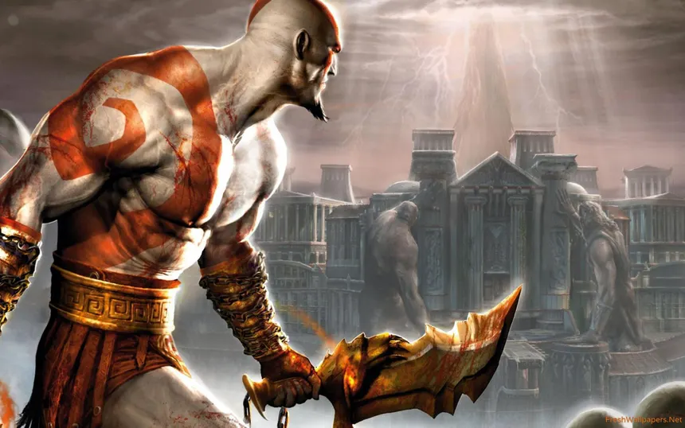
God of War II continúa la historia de Kratos en el momento en que ya ha tomado el lugar de Ares como Dios de la Guerra, pero sin haber encontrado nunca la paz. A diferencia de la primera entrega, donde la venganza era contra Ares, aquí el conflicto se expande hacia algo mucho más grande: la traición del propio Olimpo. Kratos ya no es solo un dios temido, sino un ser que ha empezado a romper las reglas del sistema que lo elevó al poder.
La historia comienza con Kratos gobernando Esparta con una brutalidad que refleja perfectamente su forma de entender el poder. Ya no busca permiso ni aprobación de los otros dioses. Su autoridad nace de la guerra misma, y su relación con los espartanos muestra que, para él, la fuerza y la lealtad siguen siendo las únicas leyes verdaderas. Sin embargo, esa posición también lo convierte en un problema para Zeus, que observa con creciente preocupación cómo Kratos se vuelve cada vez más peligroso.
Capítulo 1 – La conquista de Rodas
La historia arranca en la ciudad de Rodas, donde Kratos dirige a su ejército en un asalto brutal. La escena inicial muestra al protagonista en el máximo de su poder militar: gigantes, tropas espartanas y una máquina de guerra que avanza sin detenerse. Rodas no es solo una ciudad enemiga; es el escenario perfecto para mostrar el peso que Kratos todavía conserva como Dios de la Guerra.
En medio del combate aparece el Coloso de Rodas, una estatua animada por el poder divino que funciona como una defensa monumental de la ciudad. El enfrentamiento contra esta criatura es uno de los momentos más recordados del juego porque establece de inmediato que Kratos ya no pelea contra simples soldados o monstruos menores, sino contra símbolos vivos del poder y la resistencia.
Kratos derrota a la estatua, pero la victoria tiene un costo enorme. Zeus interviene directamente y le arrebata sus fuerzas mediante la Espada del Olimpo, engañándolo para debilitarlo y dejarlo al borde de la muerte. Esta traición no es un simple acto de castigo: es la señal definitiva de que el Olimpo ya no piensa tolerar a Kratos como parte del sistema.
Capítulo 2 – La caída de Kratos
Después del ataque de Zeus, Kratos cae derrotado y parece haber llegado nuevamente al límite de su existencia. La traición del rey de los dioses no solo lo deja físicamente vulnerable, sino que también confirma lo que él ya sospechaba: los dioses nunca lo consideraron un igual, ni siquiera después de haber ocupado el trono de Ares.
En el momento de la caída, aparece Gaia, la titán primigenia que lo rescata antes de que se pierda definitivamente. Ella representa una fuerza opuesta al Olimpo y ve en Kratos una herramienta capaz de romper el dominio de Zeus. Sin embargo, su ayuda no nace del altruismo, sino de una estrategia mayor: los titanes quieren usar a Kratos para cambiar el equilibrio del poder.
Kratos resucita dentro de la historia ya no como un simple dios traicionado, sino como un hombre que ha sido expulsado de la confianza divina y que ahora debe buscar su propio camino hacia la venganza. Desde este punto, el juego deja claro que su objetivo no será recuperar un lugar dentro del Olimpo, sino destruirlo.
Capítulo 3 – El Viaje de las Hermanas del Destino
Gaia le revela a Kratos que la única manera de cambiar su destino es llegar hasta las Hermanas del Destino, las Moiras, seres capaces de controlar la tela de la vida y decidir el final de cada ser vivo. Su presencia introduce una nueva dimensión a la historia, porque ya no se trata solo de fuerza física o traición política, sino de destino, control y libre albedrío.
Kratos emprende entonces un viaje hacia lugares donde el tiempo, la memoria y la historia pueden alterarse. La misión de encontrar a las Hermanas no es simplemente un reto más; es una búsqueda de control sobre el propio destino. Si logra llegar a ellas, podrá intentar revertir la traición de Zeus y recuperar el momento en que fue derrotado.
La ruta lo lleva a través de paisajes mitológicos, ruinas antiguas y zonas cargadas de simbología. Cada nuevo lugar refuerza la idea de que Kratos está dejando atrás el mundo mortal y entrando en una esfera donde las leyes de la realidad dependen de seres primordiales.
Capítulo 4 – La Isla de la Creación
A lo largo del viaje, Kratos llega a la Isla de la Creación, un espacio relacionado con la construcción de objetos divinos y con la influencia de figuras que participaron en la fabricación de armas y trampas para dioses y titanes. Este lugar sirve como una gran prueba de exploración y combate, pero también como una metáfora del camino que sigue Kratos: cada paso lo acerca más a la maquinaria que manipula el destino del mundo.
En la isla aparecen enemigos más complejos, secretos ocultos y obstáculos diseñados para destruir a cualquiera que intente acercarse al poder de las Moiras. La sensación de estar entrando en una estructura imposible se hace cada vez más fuerte. Kratos no avanza por un simple territorio; avanza hacia el centro mismo de la lógica que controla el tiempo.
Este tramo de la historia también ayuda a mostrar el deterioro emocional de Kratos. Él ya no está interesado en redimirse ni en comprender la voluntad de los dioses. Todo se reduce a una sola idea: vengarse y deshacer la humillación que sufrió a manos de Zeus.
Capítulo 5 – El encuentro con Teseo, Perseo y otros campeones
Uno de los elementos más interesantes de God of War II es la forma en que Kratos se enfrenta a figuras legendarias de la mitología griega que actúan como guardianes o pruebas de poder. Teseo, Perseo y otros campeones aparecen como rivales que protegen partes del camino o que sirven como símbolos de los héroes del pasado.
Cada enfrentamiento tiene una función narrativa. Kratos no solo lucha contra oponentes fuertes; también derrota representaciones del heroísmo clásico, demostrando que su propia figura ya ha sobrepasado los límites de esos antiguos relatos. Él no pelea como un héroe tradicional de Grecia: pelea como una fuerza de destrucción que el Olimpo no puede controlar.
Estos combates ayudan a reforzar el tono de la historia. Kratos sigue avanzando mientras derriba nombres ilustres, y cada victoria le recuerda que el mundo antiguo está lleno de figuras que creen poseer la verdad, aunque en realidad sean solo piezas en un sistema más grande.
Capítulo 6 – El Templo de las Hermanas del Destino
Finalmente, Kratos llega al Templo de las Hermanas del Destino, el lugar donde el tejido del tiempo puede ser alterado. Las Moiras controlan el destino de mortales y dioses por igual, y enfrentarlas significa desafiar la estructura misma del universo. Es el punto más ambicioso del juego, porque la venganza de Kratos ya no se limita a derrotar a Zeus: ahora quiere cambiar el momento que definió todo.
El templo está diseñado como una trampa de lógica y poder. Cada espacio parece representar el dominio absoluto del destino sobre la voluntad. Kratos, sin embargo, avanza sin rendirse, y ese avance simboliza una idea esencial del personaje: no acepta que su vida haya sido escrita por otros.
Cuando por fin llega a las Moiras, descubre que su poder no solo controla el futuro, sino también el pasado. Esto le da la oportunidad de volver al momento en que Zeus lo derrotó y cambiar el resultado. La historia se vuelve entonces una carrera contra el tiempo y contra la narrativa del propio Olimpo.
Capítulo 7 – La rueda del destino
Kratos usa el poder de las Hermanas para retroceder en el tiempo y regresar al momento de su derrota. Esta secuencia cambia completamente la escala de la historia, porque le permite reescribir su propia línea temporal. Ya no se trata solo de sobrevivir al presente: ahora puede corregir el instante en que todo salió mal.
La escena del viaje temporal sirve para cerrar el círculo entre pasado y presente. Kratos ya no es el mismo hombre que fue traicionado en Rodas. Ahora vuelve con más rabia, más experiencia y una voluntad todavía más afilada. La escena también refuerza el tema central del juego: el destino solo existe mientras alguien acepte obedecerlo.
A partir de este momento, Kratos deja de ser una víctima de la traición y se convierte en un cazador del Olimpo con una oportunidad real de cambiar la historia. Es una transformación enorme, tanto a nivel narrativo como emocional.
Capítulo 8 – La guerra entre titanes y dioses
En medio del caos temporal, Gaia y los titanes se lanzan contra el Olimpo. La historia escala a una guerra gigantesca donde el cielo, la tierra y el mar se llenan de fuerzas colosales. Este conflicto es uno de los más espectaculares de toda la saga, porque convierte la lucha personal de Kratos en una guerra mitológica a gran escala.
Kratos, ahora equipado con la oportunidad de cambiar su destino, avanza entre titanes, monstruos y dioses, abriendo camino hacia el centro del poder olímpico. El mundo entero parece estar rompiéndose mientras él sigue su ruta de venganza.
La escala de este tramo demuestra que el conflicto ya no pertenece a un solo héroe o a un solo dios. Es una guerra por la existencia misma de la estructura que gobierna la mitología griega.
Capítulo 9 – El reencuentro con Zeus
Tras atravesar el poder de las Moiras y el caos de la guerra entre titanes y dioses, Kratos finalmente vuelve a enfrentarse a Zeus. Este reencuentro es el corazón emocional del juego porque reúne todo lo que se acumuló desde el inicio: la traición, la humillación, el resentimiento y la necesidad de recuperar el control.
Zeus ya no es solo el rey del Olimpo. Es el símbolo de un sistema que teme a Kratos porque sabe que no puede dominarlo fácilmente. El conflicto entre ambos es directo, violento y cargado de historia. Cada golpe representa años de desconfianza y destrucción.
Kratos llega hasta Zeus no como un sirviente ni como un dios obediente, sino como una fuerza que ha roto el tiempo mismo para reclamar su lugar en la historia.
Capítulo final – El comienzo de la guerra contra el Olimpo
Aunque el juego no cierra la saga, sí deja a Kratos en un punto sin retorno. Ya no hay forma de volver al equilibrio anterior. Las Moiras han sido desafiadas, el destino ha sido quebrado y Zeus sabe que Kratos ha conseguido una ventaja peligrosa.
El final de God of War II abre directamente la puerta a la guerra total contra el Olimpo. Kratos ya no busca solo sobrevivir o corregir una injusticia. Ahora quiere destruir el sistema entero que lo traicionó, lo humilló y lo convirtió en un arma.
Por eso esta entrega es una de las más importantes de la saga: convierte a Kratos en un enemigo inevitable del Olimpo y prepara el escenario para el estallido definitivo de God of War III.
God of War III – Historia completa
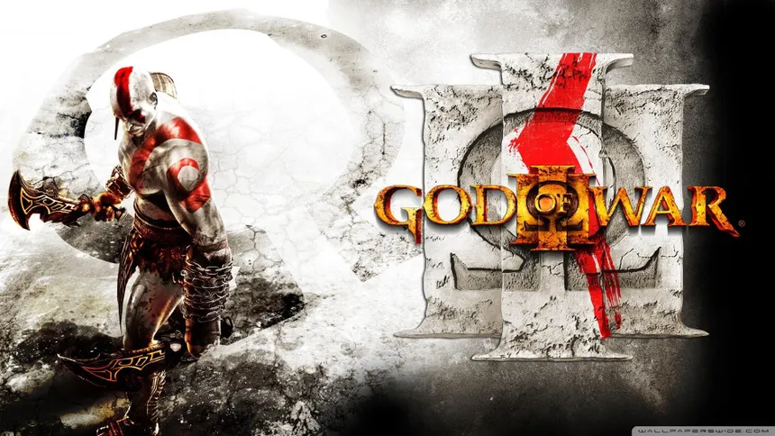
God of War III es el cierre de la saga griega y el punto máximo de la historia de Kratos en términos de escala, violencia y consecuencias. Retomando directamente desde el final de God of War II, la historia comienza con Kratos liderando a los titanes en un asalto directo al Monte Olimpo, decidido a destruir a Zeus y a todo el sistema que lo traicionó.
Este ya no es un viaje de descubrimiento ni de duda. Es una guerra total. Kratos no busca redención, ni perdón, ni equilibrio. Solo venganza. Pero a medida que avanza, la destrucción que provoca empieza a afectar no solo a los dioses, sino al mundo entero, transformando su cruzada en algo mucho más oscuro de lo que él mismo esperaba.
Capítulo 1 – El asalto al Olimpo
La historia arranca en medio del caos. Kratos, junto a Gaia y los titanes, escala el Monte Olimpo mientras los dioses intentan defender su hogar. La magnitud del conflicto es inmediata: criaturas gigantes, tormentas, fuego y destrucción total acompañan el avance.
El primer gran enfrentamiento es contra Poseidón, dios de los mares. La batalla es brutal y visualmente imponente, con océanos elevándose y el entorno colapsando alrededor. Finalmente, Kratos logra derrotarlo de forma despiadada.
Sin embargo, la muerte de Poseidón tiene consecuencias inmediatas: los mares se descontrolan, inundando el mundo. Este detalle marca el tono del juego: cada dios que cae deja un desastre irreversible.
Capítulo 2 – La traición de Gaia
Durante el ascenso, Kratos confía en Gaia como aliada, pero pronto descubre que incluso los titanes tienen sus propios intereses. En un momento crítico, Gaia lo abandona, considerándolo una herramienta prescindible.
Esta traición refuerza una idea constante en la saga: Kratos nunca ha tenido verdaderos aliados. Tanto dioses como titanes lo utilizan para sus propios fines. Este abandono deja a Kratos completamente solo en su guerra.
Lejos de detenerlo, esto solo intensifica su determinación. Ya no lucha por los titanes ni contra los dioses como facciones. Lucha contra todos.
Capítulo 3 – El descenso y el regreso
Tras ser traicionado, Kratos cae desde el Olimpo hacia el inframundo. Este descenso simboliza nuevamente su relación con la muerte: caer, resistir y volver. Es un ciclo que define su existencia.
En el inframundo, enfrenta criaturas, recuerdos y obstáculos que buscan detener su avance. Pero como ya ha demostrado antes, ni siquiera la muerte puede retenerlo. Su odio y su voluntad lo impulsan de regreso.
Este tramo refuerza algo clave: Kratos ya no es solo un guerrero. Es una fuerza imparable que trasciende incluso los límites naturales del mundo.
Capítulo 4 – Hades y el poder de las almas
De regreso en el inframundo, Kratos enfrenta a Hades, dios de los muertos. Este enfrentamiento no solo es físico, sino simbólico, ya que Hades representa el dominio sobre las almas y el destino final de todos los seres.
Tras una batalla intensa, Kratos logra derrotarlo y obtiene su poder, permitiéndole manipular almas. Sin embargo, la muerte de Hades desata el caos: las almas del inframundo quedan libres, inundando el mundo de espíritus sin control.
Una vez más, la victoria de Kratos trae consecuencias devastadoras.
Capítulo 5 – La caída de los dioses
A medida que Kratos avanza, se enfrenta a múltiples dioses del Olimpo, incluyendo a Helios, Hermes y Hera. Cada uno representa un aspecto del mundo: el sol, la velocidad, la naturaleza.
Las muertes no son heroicas ni nobles. Son violentas, crudas y brutales, mostrando a un Kratos completamente consumido por la venganza. Cada victoria lo acerca a Zeus, pero también lo aleja más de cualquier humanidad que le quedaba.
Con cada dios que cae, el mundo se deteriora aún más: oscuridad, plagas, caos natural. El equilibrio desaparece lentamente.
Capítulo 6 – Pandora y la Caja
En medio de su camino, Kratos conoce a Pandora, una figura clave ligada a la famosa Caja de Pandora. A diferencia de otros personajes, Pandora representa inocencia, sacrificio y una forma de humanidad que Kratos ha perdido.
La relación entre ambos introduce una pausa emocional en la historia. Por primera vez en mucho tiempo, Kratos interactúa con alguien sin violencia inmediata. Sin embargo, el destino vuelve a imponer su precio.
Pandora está destinada a abrir la caja, lo que implica su propia destrucción. Kratos intenta detenerlo, pero el ciclo de pérdida vuelve a repetirse.
Capítulo 7 – El enfrentamiento final contra Zeus
Finalmente, Kratos llega al enfrentamiento definitivo con Zeus. La batalla es larga, brutal y cargada de historia. No es solo un combate entre dos dioses, sino el choque entre padre e hijo, entre creador y destructor.
Durante la pelea, se revela la complejidad de Zeus, su miedo al destino y su decisión de traicionar a Kratos para evitar su propia caída. Sin embargo, esas razones no cambian nada para el protagonista.
Kratos, impulsado por años de dolor, logra derrotar a Zeus en una escena extremadamente violenta, cerrando el ciclo de venganza que comenzó desde el primer juego.
Capítulo final – El fin del Olimpo
Con Zeus muerto, el Olimpo cae. Pero la victoria no trae paz. El mundo está destruido: mares desbordados, plagas, oscuridad y caos absoluto. Kratos no ha salvado nada. Solo ha cumplido su venganza.
En el último momento, Kratos utiliza el poder de la esperanza, liberándolo en el mundo en lugar de usarlo para sí mismo. Este acto representa un cambio mínimo pero importante: por primera vez, hace algo que no está guiado únicamente por la ira.
Herido y sin propósito, Kratos se deja caer, aparentemente poniendo fin a su vida. Sin embargo, su cuerpo desaparece, dejando abierta la posibilidad de que su historia no haya terminado.
Así concluye God of War III, cerrando la saga griega con un final oscuro, devastador y profundamente trágico. Kratos logra su venganza, pero pierde todo en el proceso, dejando un mundo destruido y una leyenda marcada por el dolor.
God of War (Cómic) – El camino hacia la era nórdica
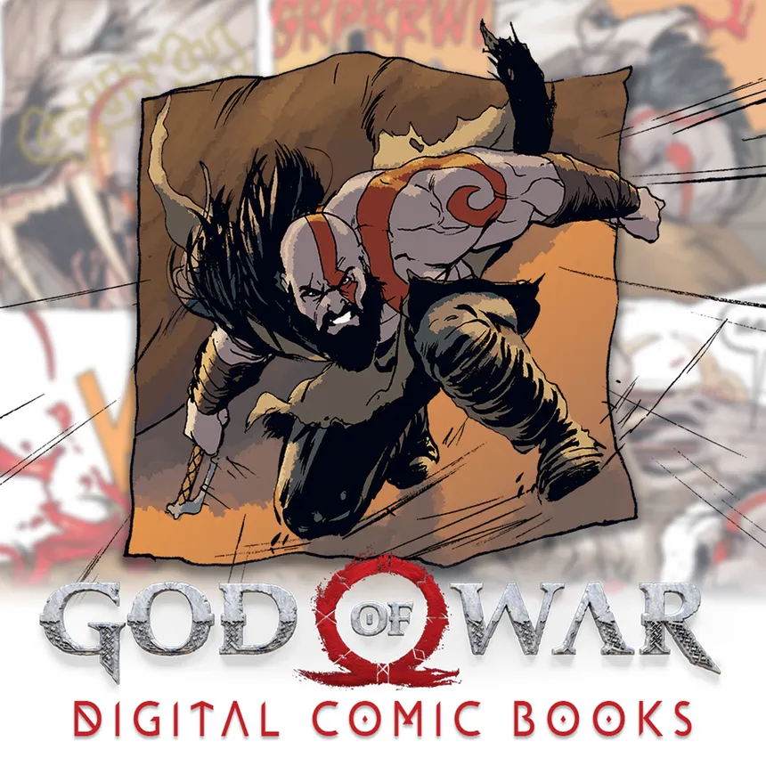
Tras los eventos de God of War III, el mundo griego queda destruido. Los dioses han caído, el equilibrio del mundo se ha roto y Kratos, el responsable de todo, desaparece dejando atrás un vacío imposible de reparar. Sin embargo, su historia no termina ahí. Los cómics que conectan la saga griega con la nórdica muestran cómo Kratos sobrevive, vaga por tierras desconocidas y comienza el proceso de transformación que lo llevará a convertirse en el hombre que veremos años después.
Esta etapa no trata de grandes guerras ni de conquistas divinas. Es un viaje silencioso, solitario y profundamente interno. Kratos ya no tiene enemigos claros ni objetivos definidos. Solo tiene el peso de todo lo que hizo y la necesidad, aunque no lo admita, de encontrar un propósito distinto.
Capítulo 1 – El mundo después del Olimpo
Después de la caída de Zeus y la destrucción del Olimpo, el mundo griego entra en una etapa de caos absoluto. Sin dioses que mantengan el orden, la naturaleza se vuelve inestable, las fuerzas que antes estaban controladas quedan libres y la humanidad queda expuesta a un entorno hostil.
Kratos sobrevive a su aparente muerte, pero lo hace en un estado completamente distinto. Ya no hay gloria, ni propósito, ni enemigos que definan su camino. Lo único que queda es el silencio y las consecuencias de sus actos.
Este momento es clave porque rompe con todo lo anterior. Por primera vez en su vida, Kratos no está luchando contra alguien. Está enfrentando lo que dejó atrás.
Capítulo 2 – El exilio
Incapaz de permanecer en un mundo que él mismo destruyó, Kratos decide marcharse. Su viaje lo lleva lejos de Grecia, atravesando territorios desconocidos y alejándose de todo lo que alguna vez definió su identidad.
Este exilio no es una misión ni una huida estratégica. Es una necesidad. Kratos no busca redención en este punto, pero tampoco puede seguir siendo quien era. El cambio no es inmediato, pero comienza con la distancia.
A medida que avanza, se enfrenta a criaturas y peligros, pero ya no lo hace con la misma furia descontrolada de antes. Aunque sigue siendo brutal, empieza a aparecer una forma distinta de actuar, más contenida, más silenciosa.
Capítulo 3 – El hombre contra el monstruo
Durante su viaje, Kratos se encuentra con nuevas amenazas, criaturas que no pertenecen al mundo griego y que parecen responder a otras mitologías. Esto marca el primer indicio de que el universo es mucho más grande de lo que él conocía.
Uno de los elementos más importantes de esta etapa es el conflicto interno. Kratos no lucha solo contra enemigos externos, sino contra su propia naturaleza. Cada combate es una oportunidad para dejar salir al monstruo que siempre fue… o intentar contenerlo.
Esta tensión entre lo que fue y lo que podría llegar a ser define toda la transición hacia la era nórdica.
Capítulo 4 – El inicio del cambio
A medida que pasa el tiempo, Kratos empieza a mostrar señales de transformación. No se convierte en una persona completamente distinta, pero sí comienza a cuestionar su forma de actuar. La violencia sigue siendo parte de él, pero ya no es su única respuesta.
Este cambio es lento, casi imperceptible, pero fundamental. Es el primer paso hacia el Kratos que veremos en la saga nórdica: un hombre que todavía carga con su pasado, pero que intenta no repetirlo constantemente.
El entorno también influye en esta transformación. Las nuevas tierras, los nuevos enemigos y la ausencia de los dioses griegos crean un espacio donde Kratos puede empezar a redefinirse.
Capítulo 5 – La llegada al norte
Finalmente, Kratos llega a tierras lejanas, frías y desconocidas: el norte. Este territorio, inspirado en la mitología nórdica, representa un nuevo comienzo. No hay rastro del Olimpo, ni de Zeus, ni de los titanes. Es un mundo distinto, con sus propias reglas, sus propios dioses y su propia historia.
Aquí, Kratos deja atrás definitivamente su pasado como figura central de un conflicto divino. Aunque sigue siendo el mismo hombre, el contexto cambia todo. Ya no es el centro del mundo. Es un extraño.
Este detalle es fundamental porque redefine su rol. En Grecia, Kratos era el eje de la destrucción. En el norte, es solo una presencia más en un mundo que no gira a su alrededor.
Capítulo 6 – El hombre que intenta cambiar
En estas nuevas tierras, Kratos empieza a construir una vida distinta. No se trata de olvidar lo que hizo, sino de vivir con ello de otra manera. Su comportamiento se vuelve más reservado, más controlado.
El guerrero que antes destruía dioses ahora intenta evitar conflictos innecesarios. No siempre lo logra, pero el intento ya marca una diferencia enorme con su pasado.
Este proceso no es perfecto ni lineal. Kratos sigue siendo peligroso, sigue siendo violento cuando es necesario, pero ya no actúa únicamente por impulso. Empieza a existir una intención detrás de sus decisiones.
Capítulo final – El comienzo de una nueva era
El cómic no termina con una gran batalla ni con un evento explosivo. Termina con una transición. Kratos ya no es el destructor del Olimpo, pero tampoco es alguien completamente redimido. Está en el medio de ambos extremos.
Este cierre conecta directamente con el inicio de God of War (2018), donde veremos a un Kratos más maduro, más controlado y enfrentando una nueva etapa de su vida, marcada por la paternidad y por un intento real de cambiar.
Así, el cómic cumple una función clave dentro de la saga: mostrar cómo un personaje definido por la venganza puede empezar, lentamente, a convertirse en algo más. No deja de ser Kratos… pero ya no es el mismo.
God of War (2018) – Historia completa
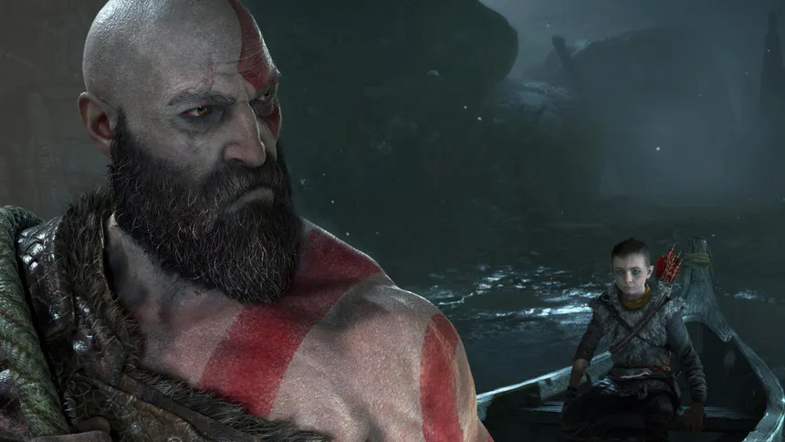
God of War (2018) marca el inicio de una nueva etapa para Kratos. Después de dejar atrás Grecia y sobrevivir a la destrucción del Olimpo, el antiguo Dios de la Guerra intenta vivir una vida más tranquila en tierras nórdicas. Esta nueva historia no comienza con una guerra abierta ni con la búsqueda de venganza, sino con una pérdida, una despedida y la necesidad de cumplir el último deseo de alguien muy importante para él.
Kratos ya no es el mismo hombre que arrasó con dioses y titanes. Ahora vive en silencio, escondiendo su pasado, intentando contener su naturaleza y alejándose de la violencia innecesaria. Sin embargo, su vida vuelve a cambiar cuando muere Faye, su esposa, y él debe emprender un viaje junto a su hijo Atreus para llevar sus cenizas a la cima más alta de los reinos.
Capítulo 1 – La pérdida de Faye
La historia comienza con la muerte de Faye, una figura central en la vida de Kratos y madre de Atreus. Su ausencia no solo marca el inicio de la aventura, sino que también obliga a Kratos a abandonar la vida aislada que había construido. La cremación y el viaje con las cenizas de Faye se convierten en el punto de partida emocional de toda la historia.
Desde este primer momento, el juego deja claro que el tono será diferente al de la saga griega. Aquí el conflicto nace del duelo, la paternidad y la dificultad de abrirse emocionalmente. Kratos sigue siendo peligroso y reservado, pero ahora tiene una responsabilidad nueva: guiar a su hijo.
Atreus, que todavía desconoce gran parte de la verdad sobre su padre y sobre sí mismo, acompaña a Kratos en una travesía que pronto se transformará en algo mucho más grande que un simple funeral. El viaje se vuelve una prueba para ambos.
Capítulo 2 – El viaje comienza
Kratos y Atreus parten desde su hogar hacia el bosque y las montañas, llevando consigo el peso del silencio, los recuerdos y una relación marcada por la distancia emocional. Kratos intenta enseñar a Atreus a sobrevivir, pero lo hace con una dureza que refleja su forma de ver el mundo: el control, la disciplina y la contención son más importantes que la expresión de sentimientos.
El comienzo del viaje muestra muy bien esa tensión. Atreus quiere entender más, hablar más y participar más activamente en lo que sucede. Kratos, en cambio, sigue desconfiando de abrirse, porque sabe que su pasado puede ser una carga demasiado pesada para un niño.
Desde el inicio, la historia construye una relación padre-hijo que no se basa en la cercanía inmediata, sino en la dificultad de aprender a confiar después de años de trauma y violencia.
Capítulo 3 – El cazador y la primera gran amenaza
Muy pronto la travesía se vuelve peligrosa cuando aparece el primer gran enemigo de la historia: el Cazador. Este encuentro muestra cómo el mundo nórdico también está lleno de figuras sobrenaturales y letales, y deja claro que Kratos no podrá completar su misión sin volver a usar toda su habilidad en combate.
La pelea contra el Cazador funciona como una bienvenida al tono del juego. Ya no estamos en un mundo donde los dioses griegos ocupan el centro, sino en una tierra distinta, con sus propios monstruos, reglas y peligros. Kratos debe adaptarse una vez más a un universo que no entiende del todo.
La diferencia es que ahora no pelea solo. Atreus observa, aprende y comienza a comprender que la violencia de su padre no es un acto vacío, sino una herramienta cargada de historia, dolor y supervivencia.
Capítulo 4 – Baldur y la primera persecución
El conflicto central de la historia comienza realmente cuando aparece Baldur. Enigmático, inmortal y claramente obsesionado con Kratos y Atreus, Baldur se convierte en la amenaza más inmediata del viaje. Su aparición introduce el elemento de persecución constante que marcará buena parte del juego.
Baldur no actúa como un enemigo común. Está motivado por una búsqueda desesperada de respuestas y por un conflicto interno que lo consume. Su inmortalidad lo vuelve casi invencible, pero también lo condena a vivir atrapado en su propia frustración. Para Kratos y Atreus, su presencia significa que el viaje ya no puede seguir siendo tranquilo ni lineal.
Cada encuentro con Baldur empuja la historia hacia adelante y obliga a Kratos a reaccionar no solo como guerrero, sino como padre protector. Esa doble función hace que los combates tengan una carga mucho mayor que simples batallas de acción.
Capítulo 5 – El descubrimiento de la verdad sobre Atreus
A medida que avanzan, Kratos empieza a notar que Atreus no es un niño común. Su salud, su comportamiento y ciertos eventos extraños revelan que su identidad está profundamente conectada con algo mucho más grande. El viaje deja de ser solo una despedida y se convierte también en un proceso de revelación.
Atreus empieza a descubrir aspectos ocultos de su herencia, mientras Kratos intenta decidir cuánto debe contarle. La tensión entre protegerlo y decirle la verdad se vuelve uno de los ejes emocionales más fuertes de la historia. Kratos sabe que ocultar información no siempre es correcto, pero también sabe que revelar demasiado puede destruir a su hijo antes de que esté listo.
Este conflicto padre-hijo es el corazón de la saga nórdica. Kratos lucha contra monstruos, sí, pero también contra su incapacidad de comunicarse. Su mayor desafío no es derrotar enemigos: es aprender a no repetir los errores del pasado.
Capítulo 6 – Los reinos y el camino al Monte más alto
Durante la travesía, Kratos y Atreus atraviesan diferentes regiones y enfrentan enemigos cada vez más peligrosos. El viaje los lleva hacia espacios que conectan varios reinos, ampliando el universo y mostrando que la mitología nórdica tiene una escala enorme, tan compleja como la griega pero con una identidad distinta.
El objetivo de llevar las cenizas a la cima más alta se transforma en una búsqueda casi espiritual. No se trata solo de cumplir un deseo final, sino de alcanzar un lugar que permita cerrar un ciclo. La montaña más alta se vuelve un símbolo de elevación, verdad y revelación.
Kratos avanza sabiendo que cada paso también lo acerca a respuestas que quizá no quiere escuchar. La travesía por los reinos funciona como una prueba de paciencia, fuerza y madurez, tanto para él como para Atreus.
Capítulo 7 – Jörmungandr y el misterio del mundo
En la historia aparece la gran serpiente del mundo, Jörmungandr, una de las figuras más imponentes de la mitología nórdica. Su presencia añade un nivel épico al viaje y también sugiere que el destino de Kratos y Atreus está conectado con fuerzas que exceden cualquier escala humana.
Jörmungandr no solo funciona como criatura mítica, sino como parte de una red de profecías, historia antigua y acontecimientos que todavía no han ocurrido. Su relación con el viaje fortalece la sensación de que esta aventura está guiada por un destino más profundo que la simple voluntad de los personajes.
A través de estos encuentros, el juego va revelando que la mitología nórdica está llena de capas temporales, simbolismos y secretos que todavía no entienden del todo. Kratos, que viene de un mundo ya destruido por la guerra divina, debe aprender a moverse en uno nuevo donde el misterio todavía está vivo.
Capítulo 8 – El pasado de Kratos vuelve
Mientras la relación entre Kratos y Atreus evoluciona, el pasado del protagonista sigue apareciendo como una sombra constante. Atreus comienza a notar que su padre esconde más de lo que dice, y esa falta de sinceridad amenaza con romper la confianza entre ambos.
Kratos comprende que ocultar su historia ya no es sostenible. La violencia, la guerra y la verdad sobre quién fue en Grecia empiezan a filtrarse inevitablemente. Esto hace que el viaje también sea un enfrentamiento con la identidad de Kratos como padre: no solo debe proteger a Atreus, sino también decidir qué clase de verdad le merece.
Este tramo es esencial porque muestra que el conflicto principal no es Baldur ni los monstruos del camino. El verdadero desafío es romper la herencia de trauma que Kratos arrastra desde hace décadas.
Capítulo 9 – La verdad sobre Faye
Cuando Kratos y Atreus se acercan al final del viaje, descubren que Faye había ocultado información crucial sobre su linaje, su destino y el papel que ambos jugarían en la historia de los reinos. Esta revelación cambia por completo la percepción del viaje.
Faye no era solo una esposa o una madre. También era una figura que entendía mucho mejor que ellos la red de profecías y decisiones que rodeaba sus vidas. Su planificación, sus silencios y sus acciones ayudan a explicar por qué este viaje debía suceder de esta manera.
La historia deja claro que Faye preparó el camino para que Kratos y Atreus llegaran hasta ese punto, aunque no les dio todas las respuestas. Esa mezcla de amor, distancia y visión a largo plazo la convierte en una de las figuras más importantes de la saga nórdica.
Capítulo 10 – El final de Baldur
El conflicto con Baldur llega a su punto máximo cuando queda claro que su obsesión con Kratos y Atreus está conectada con un dolor más antiguo, una frustración existencial que lo convirtió en una amenaza constante. Su lucha final no es solo un combate físico, sino la explosión de una cadena de heridas personales y mitológicas.
Kratos intenta resolver la situación con la mínima violencia posible, pero Baldur no deja de perseguirlo. Al final, la confrontación se vuelve inevitable, y la historia muestra que la inmortalidad no es una bendición si la mente está destruida.
La derrota de Baldur cierra el gran conflicto del juego, pero también abre la puerta a consecuencias mucho más grandes. La intervención de Kratos y Atreus deja marcas en los reinos, en las profecías y en el futuro del mundo nórdico.
Capítulo final – El legado de Faye y el nombre de Atreus
Al llegar al final del viaje, Kratos y Atreus cumplen el último deseo de Faye, llevando sus cenizas al lugar más alto de los reinos. Pero el cierre no es solo un ritual funerario. También es el punto de partida de una nueva identidad para Atreus, que aprende la verdad sobre sí mismo y sobre el peso que lleva su nombre.
Kratos, por primera vez en mucho tiempo, empieza a actuar no solo como un destructor o superviviente, sino como un padre que entiende que su mayor tarea es enseñar a su hijo a no repetir sus errores. Ese cambio es lo que convierte a God of War (2018) en una de las entregas más importantes de toda la saga.
La historia termina con una sensación de continuidad más que de cierre. Kratos y Atreus no están libres de conflicto, pero han dado el primer paso para construir una relación distinta y para enfrentar juntos el destino que se aproxima.
God of War Ragnarök – Historia completa
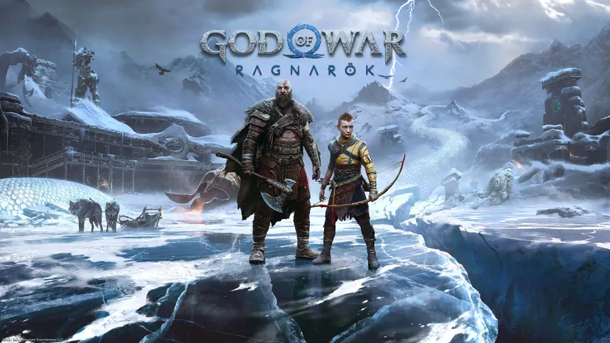
God of War Ragnarök continúa directamente los eventos de God of War (2018) y lleva la historia de Kratos y Atreus al punto más alto de la saga nórdica. La tensión que se venía acumulando desde el viaje anterior finalmente explota cuando los reinos empiezan a acercarse al Ragnarök, la catástrofe profetizada que anuncia el fin de todo. En esta entrega, la historia mezcla destino, familia, guerra, traición y sacrificio en una escala mucho más grande que antes.
Kratos ya no es el hombre que solo intenta sobrevivir. Ahora debe enfrentar las consecuencias de haber criado a Atreus en un mundo de profecías, dioses y secretos ocultos. Atreus, por su parte, ya no es un niño que solo sigue a su padre: empieza a buscar su propio papel dentro del destino que lo rodea, y eso lo lleva a cuestionar su lugar en el mundo, su nombre y la verdad sobre Loki.
Capítulo 1 – La llegada del Fimbulwinter
La historia arranca en un mundo cubierto por el Fimbulwinter, un invierno eterno que marca el inicio de los eventos previos al Ragnarök. Los reinos están congelados, la naturaleza se ha vuelto hostil y el equilibrio está roto. Kratos y Atreus viven aislados, intentando mantenerse fuera del alcance de los dioses, pero el mundo ya no les da respiro.
Atreus ha crecido y quiere entender más sobre su destino. Kratos, en cambio, sigue intentando controlar la situación con silencio y disciplina. La distancia entre ambos comienza a notarse más que nunca. Ya no están viviendo solo como padre e hijo: están viviendo como dos personas que se acercan a un conflicto inevitable.
La calma inicial dura poco. La profecía, la amenaza de Asgard y la presión de los dioses nórdicos empiezan a empujar el viaje hacia una nueva guerra.
Capítulo 2 – Thor llega a la puerta
Uno de los momentos más impactantes de la historia ocurre cuando Thor aparece en la casa de Kratos y Atreus. Su llegada marca el verdadero comienzo del conflicto abierto. Thor no llega como una amenaza lejana, sino como una fuerza directa y brutal que representa el poder de Asgard.
La conversación entre Kratos y Thor es tensa, cargada de historia y advertencia. Ambos se reconocen como hombres que cargan con enormes pérdidas y responsabilidades, pero eso no evita que el conflicto se sienta inevitable. El encuentro deja claro que la paz ya terminó.
La presencia de Thor también introduce un tono más agresivo y personal. Ya no se trata solo de una profecía distante: los dioses están tocando la puerta de la vida de Kratos y Atreus.
Capítulo 3 – La búsqueda de Tyr
Con el conflicto ya en marcha, Kratos y Atreus se embarcan en la búsqueda de Tyr, el antiguo dios de la guerra nórdica que supuestamente podría ayudarles a evitar el desastre. Esta búsqueda funciona como una excusa narrativa para explorar nuevos reinos, nuevos personajes y nuevas piezas del destino que rodea a la familia.
A lo largo del viaje, Kratos sigue mostrando su preocupación por Atreus, pero ahora su control se ve desafiado por la necesidad del chico de descubrir quién es realmente. La relación entre ambos se vuelve más compleja porque Atreus ya no acepta obedecer sin preguntas.
Cada paso hacia Tyr también acerca a los protagonistas a las verdades ocultas del mundo nórdico, revelando que los reinos están mucho más conectados con el destino de lo que parecía al principio.
Capítulo 4 – Los reinos y el peso de la profecía
Durante la historia, Kratos y Atreus viajan por varios reinos, y cada uno aporta una capa distinta al conflicto. El viaje no es solo geográfico; también es emocional y simbólico. Cada reino refleja un aspecto del destino, la guerra o la familia.
Atreus empieza a descubrir visiones, secretos y fragmentos de la profecía de Loki. Kratos, al notar que su hijo se involucra cada vez más en un camino desconocido, trata de protegerlo ocultando información. Pero esa decisión, como ya ocurrió en el pasado, solo aumenta la distancia entre ambos.
La historia se vuelve entonces una tensión constante entre la voluntad de Kratos de preservar a su hijo y el deseo de Atreus de definir su propio lugar dentro de la profecía.
Capítulo 5 – Angrboda y Jötunheim
Uno de los grandes descubrimientos de la historia es la existencia de Angrboda, una joven gigante que conoce profundamente el peso de las profecías y el papel que cumplen en el destino de los personajes. Su encuentro con Atreus abre una nueva perspectiva sobre el futuro y sobre el legado de los gigantes.
A través de Angrboda, Atreus empieza a entender que su historia no es solo la de un hijo de Kratos. También está conectada a los gigantes, a Loki y a una red de recuerdos, visiones y responsabilidades que lo superan.
Jötunheim se convierte en un lugar central para el desarrollo emocional de la historia porque allí se revelan verdades que Kratos no podía comprender por sí solo. El peso del pasado de Faye también se siente con más fuerza en esta parte del viaje.
Capítulo 6 – Freya y la venganza
Otro eje importante del juego es el conflicto con Freya, que pasó de aliada a enemiga tras los eventos de la entrega anterior. Su dolor por la pérdida de Baldur la consume, y su venganza se convierte en uno de los motores emocionales más fuertes de la historia.
Freya ya no lucha solo como una diosa poderosa. Lucha como una madre rota por el duelo. Eso hace que sus enfrentamientos con Kratos y Atreus tengan una carga emocional muy distinta a la de otros enemigos. La violencia aquí no nace del poder, sino del dolor.
La historia de Freya es fundamental porque refleja un espejo de Kratos: dos padres destruidos por la pérdida, obligados a enfrentarse mientras intentan encontrar sentido en un mundo gobernado por tragedias y profecías.
Capítulo 7 – Odin y la manipulación
Odin se revela como la figura más peligrosa de toda la saga nórdica. A diferencia de Thor, que actúa con fuerza directa, Odin trabaja mediante manipulación, espionaje, promesas, mentiras y control psicológico. Su poder no está solo en la magia o la autoridad: está en su capacidad de infiltrarse en las vidas de otros y moldearlas desde adentro.
A lo largo de la historia, Odin intenta dividir a Kratos y Atreus, usar sus dudas y aprovechar su necesidad de respuestas. Cada interacción con él deja claro que es una figura que domina el tablero con paciencia, observación y crueldad.
Odin representa el lado más frío del poder. No destruye por impulso; destruye porque entiende que controlar la información y el miedo vale más que cualquier fuerza bruta.
Capítulo 8 – Atreus y el nombre de Loki
El desarrollo de Atreus es una de las partes más importantes de Ragnarök. A medida que avanza la historia, el chico empieza a aceptar que no es solo el hijo de Kratos. También es Loki, una figura profética con un papel mucho más amplio dentro del destino de los reinos.
Este descubrimiento lo empuja a actuar con más independencia, pero también lo pone en conflicto con su padre. Atreus quiere saber, comprender y decidir. Kratos quiere protegerlo incluso cuando eso implique ocultarle la verdad.
La relación entre ambos se vuelve más tensa porque el crecimiento de Atreus exige que Kratos deje de tratarlo como un niño. Esta transición es emocionalmente intensa y define buena parte del corazón del juego.
Capítulo 9 – La guerra se acerca
Mientras todos los personajes se preparan para el inevitable Ragnarök, la historia empieza a reunir piezas de un conflicto mucho mayor. Los reinos están en tensión, los dioses se mueven estratégicamente y las profecías parecen converger en un único punto de ruptura.
Kratos, que durante años intentó huir de su destino como destructor de dioses, vuelve a encontrarse frente a una guerra que no puede evitar. La diferencia es que ahora no lucha solo por venganza. Lucha por proteger a su hijo y por impedir que Atreus caiga en los mismos errores que él cometió.
La historia construye una sensación de inevitable colapso, como si el mundo entero estuviera esperando el momento en que todo se rompa.
Capítulo 10 – El inicio del Ragnarök
La catástrofe finalmente comienza. El Ragnarök deja de ser una profecía y se convierte en una guerra real. Ejércitos, dioses, titanes, gigantes y fuerzas del destino chocan entre sí en un conflicto que abarca todos los reinos.
Kratos participa no como destructor ciego, sino como alguien que intenta guiar el desastre hacia una salida menos fatal. Aun así, el conflicto es tan grande que cada decisión tiene consecuencias enormes.
La batalla deja claro que ya no hay una solución simple. El destino no puede ser ignorado, pero tampoco tiene por qué cumplirse exactamente como fue escrito.
Capítulo 11 – La verdad de Kratos
Durante el conflicto, Kratos enfrenta su propia identidad de una forma mucho más directa que en el pasado. Ya no puede esconderse detrás del silencio ni fingir que su historia no afecta a su hijo. Debe aceptar que su pasado sigue vivo dentro de él, pero también que eso no lo condena a repetirlo.
Este es uno de los momentos más importantes de toda la saga, porque Kratos deja de ser solo un guerrero maldito y se convierte en un padre que aprende a escuchar, confiar y cambiar. El cambio no borra su pasado, pero sí le da una nueva forma de existir.
La relación con Atreus alcanza aquí una madurez mucho mayor. Kratos ya no solo lo protege: también lo reconoce como alguien capaz de tomar decisiones propias.
Capítulo 12 – La caída de Odin
El enfrentamiento final contra Odin cierra la gran conspiración que gobernaba los reinos. Su caída no es solo la derrota de un villano, sino el derrumbe de un sistema construido sobre manipulación, miedo y control absoluto.
Odin, que había pasado la historia moviendo piezas desde las sombras, finalmente pierde el control de la situación. Su derrota libera a los reinos de su influencia, aunque las heridas que dejó no desaparecen de inmediato.
El final de Odin representa también una forma de cierre para el ciclo de manipulación que había perseguido a Kratos desde Grecia. Esta vez, el protagonista no actúa como destructor ciego, sino como alguien que entiende el valor de romper un ciclo sin repetirlo.
Capítulo final – Un nuevo comienzo
El cierre de God of War Ragnarök deja a Kratos y Atreus en un nuevo punto de partida. Ya no están definidos por la profecía, ni por la guerra, ni por el control de dioses que deciden por ellos. Han perdido, han sufrido y han cambiado.
Kratos acepta por fin que su vida no tiene que estar marcada únicamente por la destrucción. Atreus, por su parte, se aleja para seguir su propio camino, llevando consigo lo aprendido y construyendo su identidad más allá de la sombra de su padre.
Así termina la saga nórdica principal: no con una destrucción total, sino con la posibilidad de una nueva vida. Kratos no se convierte en un hombre perfecto, pero sí en uno que por fin comprende que el cambio es posible.
God of War Ragnarök: Valhalla – Historia completa
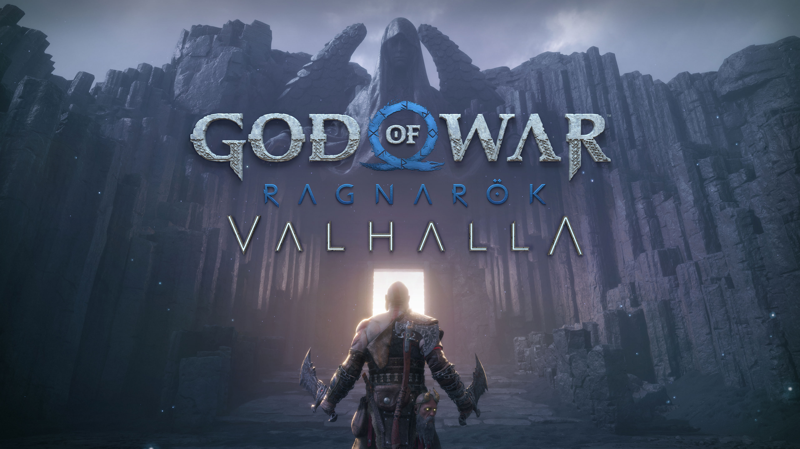
God of War Ragnarök: Valhalla funciona como el epílogo de la saga nórdica y se centra por completo en Kratos, en su mente y en el peso de todo lo que fue. Después de los eventos de Ragnarök, Kratos ya no está envuelto en una guerra abierta contra los dioses, sino en un viaje mucho más íntimo: enfrentarse a sí mismo, a sus recuerdos y a la posibilidad de convertirse en algo distinto a lo que siempre creyó ser.
A diferencia de los juegos anteriores, aquí la historia no avanza como una guerra lineal, sino como una serie de pruebas simbólicas dentro de Valhalla, un lugar que funciona al mismo tiempo como reto, juicio y espacio de reflexión. Kratos entra allí no para conquistar algo externo, sino para descubrir si todavía puede cambiar de verdad.
Capítulo 1 – La invitación a Valhalla
Tras la guerra contra Odin y el final del Ragnarök, Kratos recibe una nueva llamada. No se trata de una amenaza inmediata ni de una venganza nueva, sino de una invitación a entrar en Valhalla. Ese nombre, asociado al honor de los guerreros caídos, se convierte aquí en un espacio donde Kratos deberá enfrentarse al pasado que lleva encima desde hace décadas.
El viaje ya no tiene como objetivo salvar reinos o derrotar dioses. Esta vez el conflicto es interno. Kratos debe aceptar que su mayor batalla no está afuera, sino en su propia identidad. Valhalla lo recibe como un guerrero agotado, pero también como alguien que todavía no ha terminado de definirse.
Capítulo 2 – El juicio del guerrero
Dentro de Valhalla, Kratos atraviesa pruebas que no solo miden fuerza, sino también decisión, memoria y resistencia emocional. El lugar parece responder a sus miedos, a su culpa y a todo lo que intentó esconder durante años. Cada desafío funciona como un espejo que lo obliga a mirar su historia sin escapatoria.
En esta etapa, el viaje tiene una estructura distinta a la de los juegos principales. Kratos avanza, cae, se levanta y vuelve a intentarlo, como si el propio lugar estuviera exigiéndole demostrar que merece seguir adelante. No se trata de vencer por poder bruto, sino de aprender a cargar con el peso de la propia existencia.
La historia usa esa dinámica para reforzar una idea clave: Kratos no necesita destruir más para crecer. Necesita comprender.
Capítulo 3 – Los recuerdos de Grecia
A medida que avanza, Kratos se enfrenta a ecos de su pasado griego. Las culpas, las pérdidas y las decisiones que lo convirtieron en el Fantasma de Esparta siguen presentes, aunque ya no tengan forma de guerra abierta. Valhalla convierte esos recuerdos en pruebas vivas, obligándolo a revivir partes de su historia que nunca sanaron por completo.
Lo importante de esta parte no es solo ver el pasado de Kratos otra vez, sino entender que ese pasado ya no puede ser ignorado. Durante años, él lo cargó como una condena muda. En Valhalla, por fin tiene que responderle.
Esa confrontación da profundidad al cierre de su historia nórdica, porque muestra que el verdadero enemigo no es un dios externo, sino la idea de que Kratos solo puede ser definido por lo que destruyó.
Capítulo 4 – El camino del cambio
Valhalla funciona como una prueba de transformación. Cada vez que Kratos cae y vuelve a levantarse, la historia le recuerda que el cambio no ocurre de golpe. No basta con sobrevivir a la guerra o con dejar de pelear por venganza. También hay que aprender a vivir con la propia historia sin dejar que la historia decida por completo quién eres.
A través de este proceso, Kratos empieza a mostrarse más abierto a aceptar otras formas de ser. Ya no está simplemente resistiendo; está tratando de entender qué clase de hombre puede convertirse después de todo lo vivido. Eso hace que este DLC tenga una carga emocional tan fuerte como la de los grandes momentos de la saga.
La idea de honor cambia de significado. Ya no es una cuestión de matar mejor o más rápido, sino de asumir la responsabilidad de vivir con integridad.
Capítulo 5 – La voz interior
Uno de los aspectos más importantes de Valhalla es cómo Kratos se enfrenta a su propia voz interna, a su memoria y a las partes de sí mismo que siempre intentó silenciar. El lugar no solo lo reta físicamente; también lo obliga a hablar consigo mismo de un modo que rara vez había ocurrido en su historia.
Ese diálogo interno sirve para mostrar una evolución enorme del personaje. El Kratos que antes solo respondía con violencia ahora comienza a escuchar, reflexionar y aceptar que no puede seguir viviendo únicamente como una máquina de guerra.
La historia utiliza esta estructura para cerrar el arco emocional de la saga nórdica: Kratos ya no está huyendo de sí mismo. Está empezando a comprenderse.
Capítulo 6 – La prueba de seguir adelante
Cada desafío de Valhalla empuja a Kratos a una conclusión distinta, pero todas apuntan al mismo lugar: el pasado no desaparece, pero tampoco tiene por qué dictar el futuro. El viaje se convierte así en una especie de ceremonia de paso donde el guerrero acepta que la fuerza no basta si no existe también voluntad de cambio.
Esa idea vuelve el DLC muy especial dentro de toda la saga. No hay una guerra monumental, ni un dios final, ni una profecía de destrucción. Lo que hay es un hombre enfrentando la posibilidad de vivir de otra manera. Y para Kratos, eso es más difícil que cualquier batalla.
Capítulo final – Kratos frente a sí mismo
El cierre de Valhalla deja a Kratos en un punto muy diferente al de sus primeras aventuras. Ya no es solo el guerrero arrastrado por la rabia, ni el dios que solo sabía destruir. Ahora es alguien que empieza a aceptar la idea de construir algo nuevo con todo lo que sobrevivió.
La importancia de este final está en que no resuelve la historia con una victoria externa. La resuelve con una evolución interna. Kratos sale de Valhalla más consciente de quién es, de lo que perdió y de lo que todavía puede llegar a ser.
Así, God of War Ragnarök: Valhalla cierra la etapa nórdica mostrando que el viaje de Kratos no terminó con una guerra, sino con una decisión: seguir viviendo y cambiar.
Personajes de God of War – Saga Griega y Nórdica
A continuación se reúnen los personajes más importantes del universo de God of War, incluyendo protagonistas, dioses, titanes, mortales, aliados, enemigos y jefes clave de la saga griega y la saga nórdica.
Kratos
Kratos es el protagonista absoluto de la saga. Nació como un guerrero espartano, entrenado desde joven para sobrevivir en un mundo donde la fuerza definía el valor de una persona. En esa etapa de su vida se convirtió en un general temido, capaz de liderar batallas imposibles y de someterse únicamente al deber.
Su destino cambió cuando, desesperado por sobrevivir, hizo un pacto con Ares. Ese acuerdo lo convirtió en un arma del dios de la guerra, pero también lo arrastró a la tragedia más grande de su vida: la muerte de su esposa y su hija por sus propias manos. Desde entonces, Kratos quedó marcado por la culpa y por las cenizas de su familia, que se pegaron a su piel y lo transformaron en el Fantasma de Esparta.
Después de vengarse de Ares, Kratos terminó ocupando su lugar como Dios de la Guerra. Sin embargo, el poder no le trajo paz. Zeus lo traicionó, el Olimpo lo persiguió y Kratos respondió con una guerra total que destruyó la mitología griega. En la saga nórdica, ya viejo y cansado, intenta vivir de otra manera junto a Atreus, enfrentando su pasado mientras aprende a ser padre y a cambiar sin dejar de ser él mismo.
Atreus / Loki
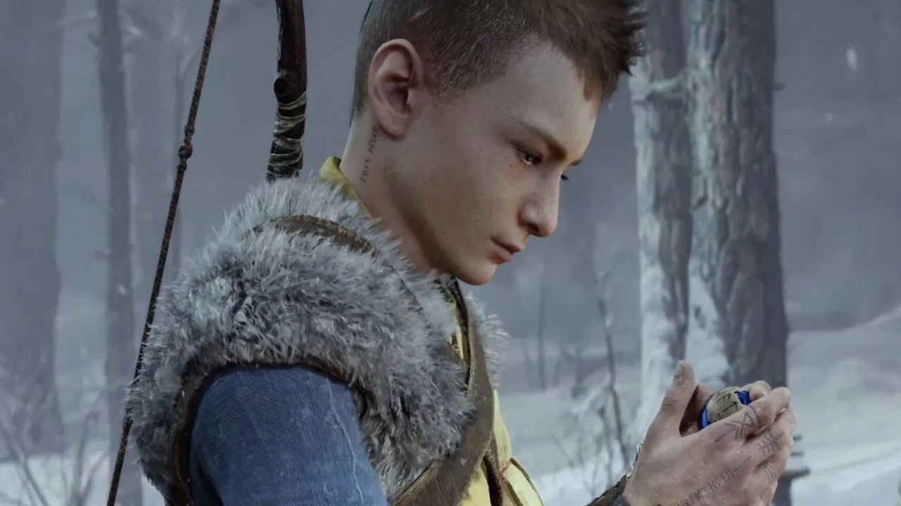
Atreus es el hijo de Kratos y Faye. Durante gran parte de su infancia no conoce toda la verdad sobre su herencia, pero desde temprano muestra sensibilidad, curiosidad y una inteligencia muy distinta a la de su padre. Su historia en la saga nórdica gira en torno a la búsqueda de identidad, al descubrimiento de su linaje y a su rol dentro de las profecías.
Con el tiempo, Atreus descubre que es mitad dios y mitad gigante, y que su verdadero nombre dentro del contexto profético es Loki. Ese descubrimiento lo empuja a buscar su propio destino, a veces en desacuerdo con Kratos, pero siempre movido por el deseo de entender quién es y qué papel tiene en el mundo.
Atreus representa el futuro de la saga. Donde Kratos carga con destrucción y culpa, Atreus intenta construir, preguntar y comprender. Su crecimiento es uno de los ejes emocionales más importantes de toda la etapa nórdica.
Deimos
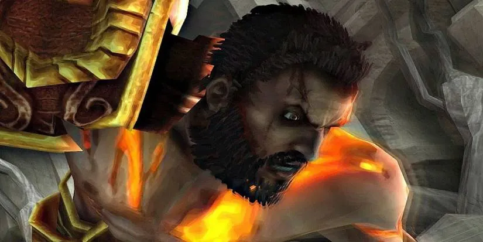
Deimos es el hermano menor de Kratos y una de las figuras más trágicas de toda la saga. Cuando eran niños, él fue separado de Kratos por intervención de los dioses, que temían una profecía relacionada con la caída del Olimpo. Ese secuestro destruyó la infancia de ambos y dejó una herida que nunca sanó del todo.
Mientras Kratos siguió creciendo como espartano, Deimos fue llevado a un destino de dolor y tortura que transformó por completo su vida. Su regreso en Ghost of Sparta revela una relación rota por años de ausencia, sufrimiento y resentimiento. Para Deimos, Kratos fue el hermano que no pudo salvarlo; para Kratos, Deimos fue la pérdida que nunca dejó de perseguirlo.
La muerte de Deimos es uno de los momentos más trágicos de la saga griega, porque confirma que incluso cuando Kratos intenta reparar su pasado, el mundo divino le arrebata la posibilidad de redención.
Faye / Laufey
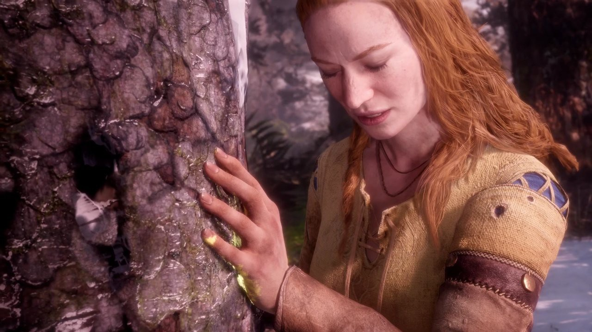
Faye, también conocida como Laufey, es la esposa de Kratos y madre de Atreus. A diferencia de otras figuras femeninas de la saga, Faye no aparece solo como acompañante: su historia está profundamente ligada al destino de la era nórdica. Ella conocía mucho más de lo que parecía y dejó preparado el camino para que Kratos y Atreus emprendieran su viaje.
Su muerte marca el inicio de God of War (2018), pero su presencia continúa influyendo en toda la historia. Faye representa el amor silencioso, la previsión y la sabiduría de alguien que entendía el peso del destino y decidió actuar antes de desaparecer.
Su legado guía a Kratos y Atreus incluso después de morir, porque fue ella quien conectó a la familia con el viaje que revelaría la verdad sobre los gigantes, Loki y los reinos nórdicos.
Calíope
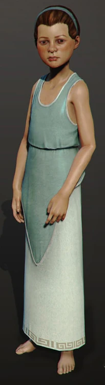
Calíope es la hija de Kratos en la era griega. Su muerte, junto con la de su madre, es el evento que rompe por completo la vida del protagonista y lo empuja al pacto con Ares. Para Kratos, Calíope no es solo una víctima: es la representación de todo lo que perdió por confiar en dioses que nunca tuvieron compasión.
La memoria de Calíope lo persigue durante toda la saga griega y reaparece como símbolo de la inocencia perdida y del castigo eterno. En Chains of Olympus, su presencia emocional tiene un peso enorme, porque demuestra que Kratos todavía conserva algo humano incluso en medio de su brutalidad.
Zeus
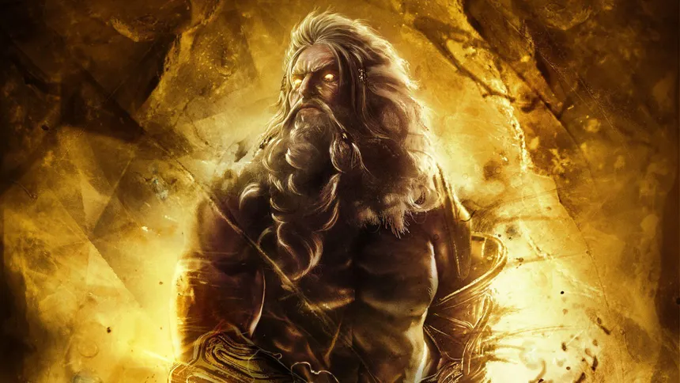
Zeus es el rey del Olimpo y el dios supremo de la mitología griega en God of War. Gobierna con autoridad absoluta, pero también con miedo constante a las profecías. Cuando percibe que Kratos puede convertirse en una amenaza para su reinado, decide traicionarlo antes de que sea demasiado tarde.
Su relación con Kratos está marcada por la mentira, el rechazo y la violencia. Zeus no solo es el jefe final de la saga griega, sino también el símbolo del poder que destruye a quienes intenta controlar. Su caída en God of War III representa el final del orden olímpico y el colapso de una era entera.
Ares
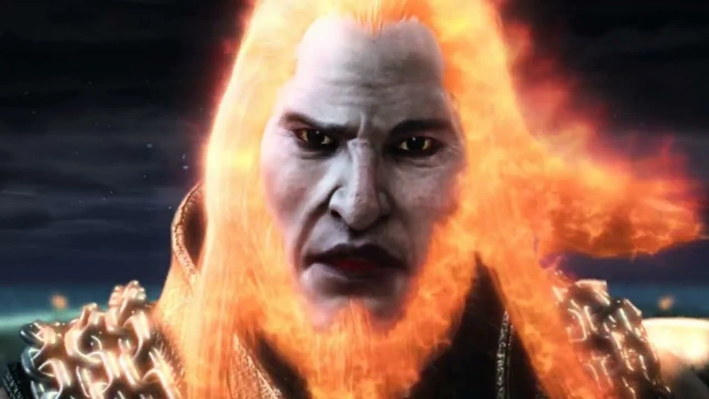
Ares es el antiguo Dios de la Guerra y el responsable directo de la tragedia que define a Kratos. Fue él quien lo manipuló para convertirlo en su siervo y quien lo llevó a asesinar a su propia familia. Su papel no es solo el de villano, sino el de detonante de toda la historia de Kratos.
Ares representa la guerra en su forma más salvaje, sin disciplina ni propósito moral. Su derrota en God of War (2005) no solo libera a Kratos de su servicio, sino que lo empuja a convertirse en el siguiente Dios de la Guerra, cerrando un ciclo y abriendo otro aún más violento.
Atenea
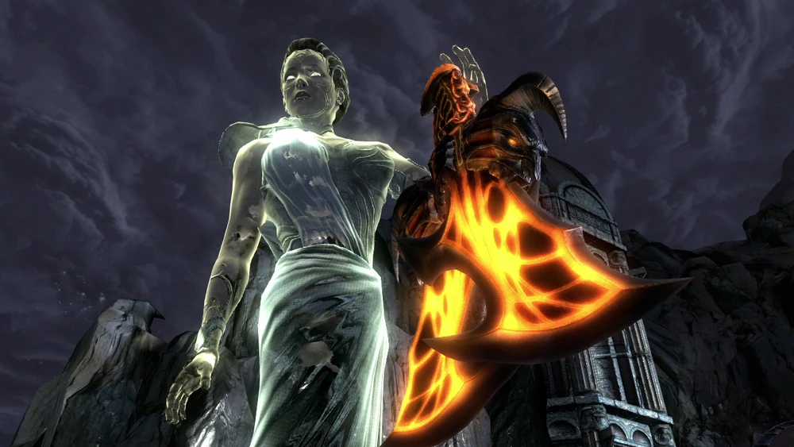
Atenea es una de las diosas más importantes de la saga griega. A menudo guía a Kratos, le da misiones y actúa como una presencia que parece más sabia que el resto de los dioses. Sin embargo, su rol nunca es completamente inocente, porque también forma parte del sistema que manipula a Kratos.
Su relación con el protagonista es compleja. Lo ayuda, lo utiliza y en muchos momentos le muestra la verdad parcial sobre lo que ocurre. Con el tiempo, Atenea deja de ser solo una guía y se convierte en una figura que representa el ideal perdido de orden, aunque siempre con una distancia emocional enorme.
Poseidón
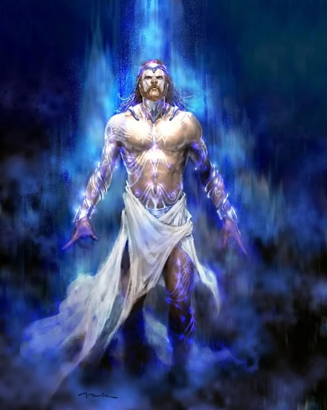
Poseidón es el dios del mar y uno de los primeros grandes dioses en caer durante God of War III. Su muerte tiene consecuencias inmediatas sobre el mundo, provocando inundaciones masivas y reforzando la idea de que cada dios que Kratos mata deja un desastre irreversible.
Su presencia en la saga representa la fuerza indomable del mar, pero también la arrogancia olímpica. Como los demás dioses, subestima a Kratos hasta que ya es demasiado tarde.
Hades
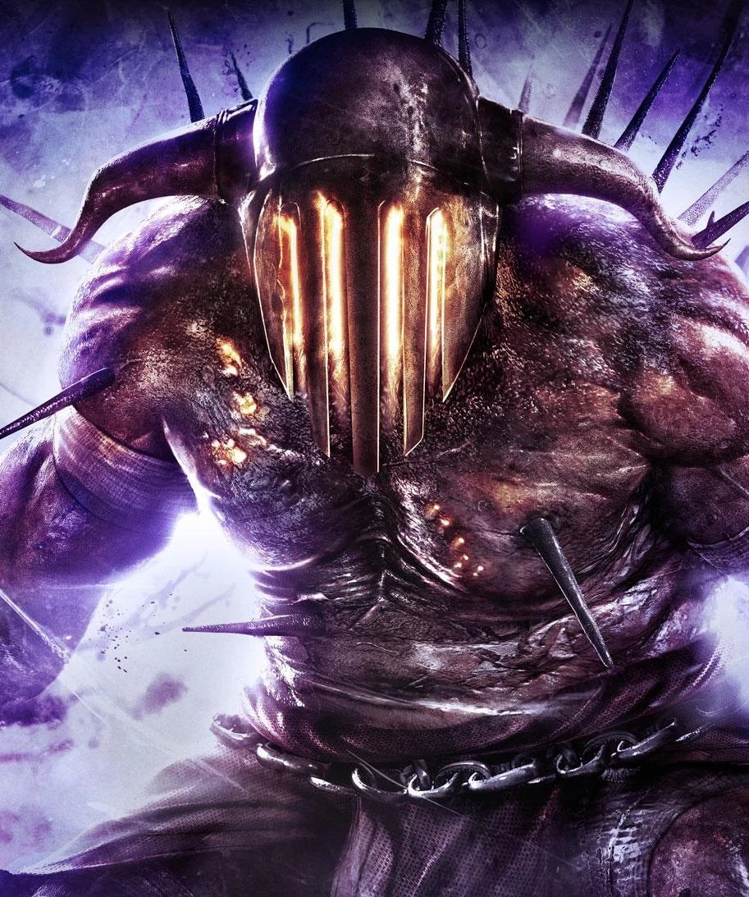
Hades es el dios del inframundo y el guardián de las almas de los muertos. Su papel dentro de la saga está profundamente ligado a la muerte, la condena y el castigo eterno. Es una figura que Kratos enfrenta de manera directa durante la guerra contra el Olimpo.
Cuando Kratos lo derrota, el inframundo se desestabiliza y las almas quedan libres, provocando caos en el mundo de los muertos. Su caída simboliza la ruptura de uno de los pilares más antiguos del orden griego.
Helios
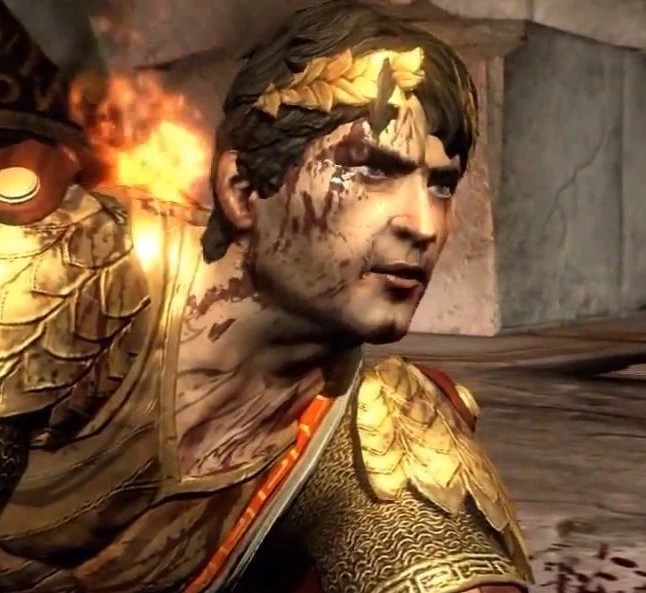
Helios es el dios del sol y una pieza esencial del equilibrio del mundo griego. Su desaparición en Chains of Olympus y su muerte posterior en God of War III reflejan la fragilidad del orden divino. Sin él, el mundo se hunde en oscuridad y descontrol.
Su función dentro de la saga es tanto literal como simbólica: representa la luz, la verdad y la estabilidad. Cuando cae, también se debilita la estructura del mundo.
Hermes
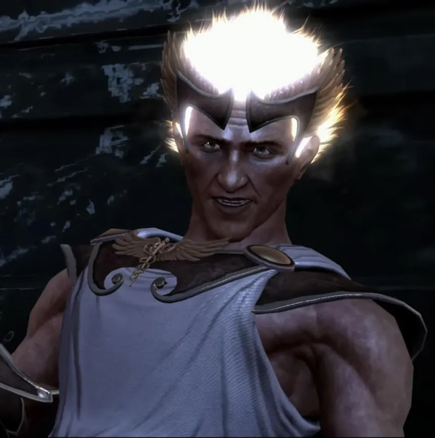
Hermes es el mensajero de los dioses y uno de los enemigos más arrogantes de la saga. Su velocidad y su desprecio hacia Kratos lo convierten en una figura particularmente odiosa dentro de God of War III.
Aunque representa la rapidez y el ingenio, su verdadera función narrativa es mostrar cómo incluso los dioses menores del Olimpo se sienten intocables hasta que Kratos llega a destruirlos.
Hera
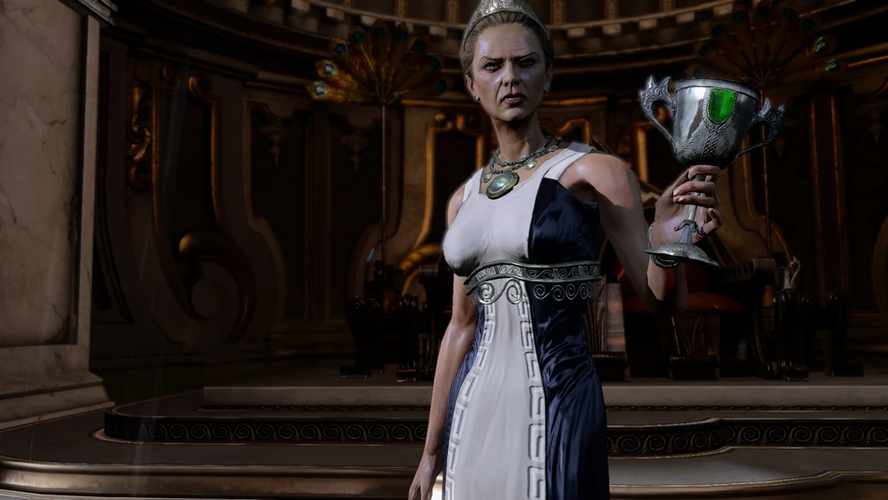
Hera es la reina del Olimpo y una de las figuras más decadentes de la saga. Su presencia en God of War III simboliza el desgaste moral del mundo divino. Está rodeada de poder, pero ya no tiene la fuerza ni la autoridad de una reina verdadera.
Su caída ayuda a mostrar que el Olimpo no solo está siendo destruido físicamente, sino también moral y simbólicamente.
Hércules
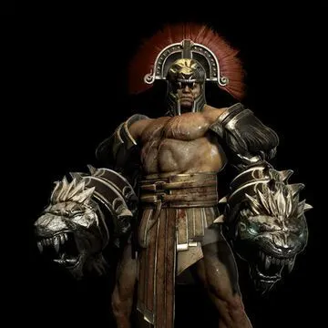
Hércules aparece como un enemigo poderoso y trágico. Aunque en la mitología suele ser un héroe, en God of War se convierte en una figura consumida por la envidia, el resentimiento y el deseo de reconocimiento por parte de los dioses.
Su conflicto con Kratos refleja lo que ocurre cuando un héroe queda atrapado en la sombra de otros. Es uno de los combates más personales de la saga griega.
Persephone
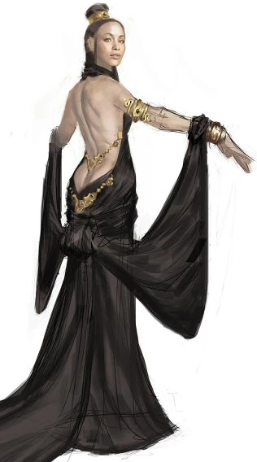
Persephone es la antagonista principal de Chains of Olympus. Busca destruir el mundo como forma de escapar de su propia prisión divina y de vengarse de un sistema que considera insoportable.
Su historia añade una capa trágica al conflicto, porque no es malvada de forma simple: está rota por su propia condición y por el mundo que la rodea.
Thanatos
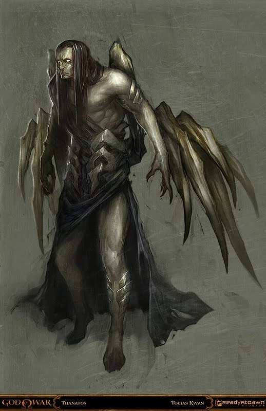
Thanatos es el dios primordial de la muerte y uno de los enemigos más importantes de Ghost of Sparta. Su dominio sobre la muerte le da una presencia oscura y definitiva, como si todo el sufrimiento de Kratos y Deimos terminara orbitando alrededor de él.
Su confrontación con Kratos y Deimos cierra una de las historias más personales de la saga, porque lo convierte en el responsable directo del punto más trágico del vínculo entre los hermanos.
The Furies
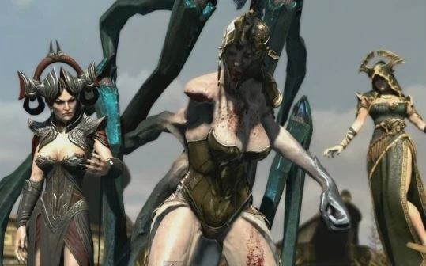
Las Furias son las antagonistas de God of War: Ascension. Su función es castigar a quienes rompen juramentos y mantener el orden divino a través del sufrimiento. Más que simples jefes, representan la culpa convertida en castigo eterno.
Kratos las enfrenta mientras intenta liberarse de la condena que le impuso el pacto con Ares. Su presencia vuelve a traer al frente el tema central del personaje: la libertad frente al control de fuerzas superiores.
Orkos
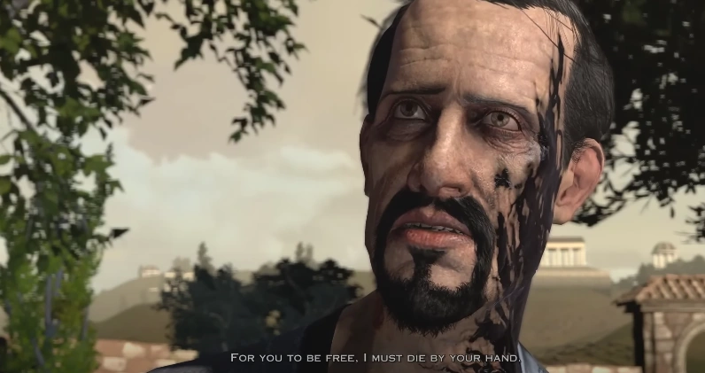
Orkos es una figura clave en Ascension. Conoce la verdad detrás del castigo que persigue a Kratos y actúa como aliado, guía y testigo del sufrimiento del protagonista. Su historia está unida al sacrificio y a la idea de que liberar a Kratos puede tener consecuencias terribles para quien lo ayuda.
Su papel aporta una dimensión emocional muy fuerte a la precuela, porque es uno de los pocos que entiende realmente el peso de la condena de Kratos.
Las Moiras / Hermanas del Destino
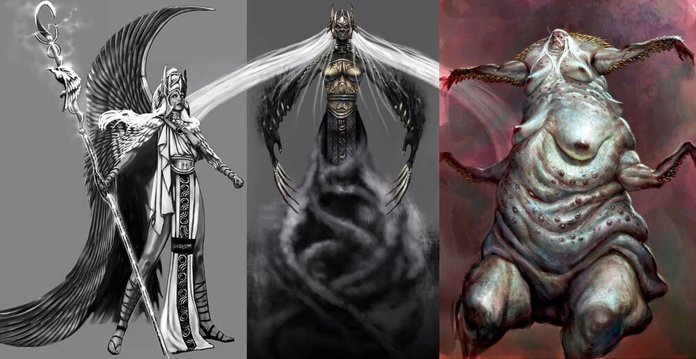
Las Hermanas del Destino controlan el tejido del tiempo y el destino de dioses y mortales. En God of War II, Kratos las enfrenta para recuperar el momento en que fue traicionado por Zeus. Son una de las fuerzas más importantes de la saga porque representan el control absoluto sobre la vida.
Su derrota permite a Kratos reescribir parte del destino y avanzar hacia la guerra final contra el Olimpo.
Pandora
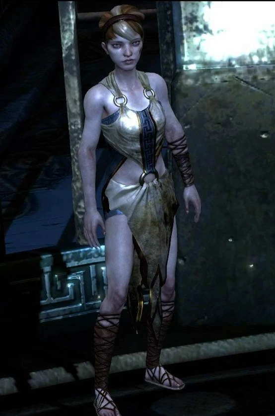
Pandora es una figura central en God of War III. Ligada a la Caja de Pandora y al tema de la esperanza, representa la inocencia, el sacrificio y la posibilidad de algo distinto dentro de un mundo destruido por la violencia.
Su relación con Kratos muestra por primera vez una faceta distinta del protagonista, más protectora y menos destructiva. Pandora recuerda al héroe que todavía puede elegir qué hacer con el poder que tiene.
Gaia
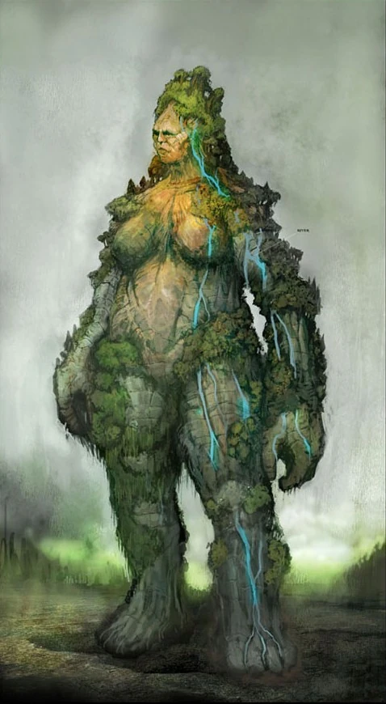
Gaia es una titán primordial que rescata a Kratos al inicio de God of War II y lo utiliza para sus propios fines contra Zeus. Al principio parece una aliada, pero con el tiempo se revela que sus intereses no son completamente altruistas.
Su historia refleja el conflicto entre titanes y dioses, y también la forma en que Kratos siempre termina siendo usado por fuerzas más grandes que él.
Cronos

Cronos es uno de los titanes más imponentes de toda la saga. Carga con el Templo de Pandora sobre su espalda y representa el castigo eterno, la paciencia forzada y la caída de los antiguos poderes.
Su historia conecta directamente con la mitología más antigua de God of War y muestra el nivel de escala que alcanza la guerra entre titanes y dioses.
Atlas
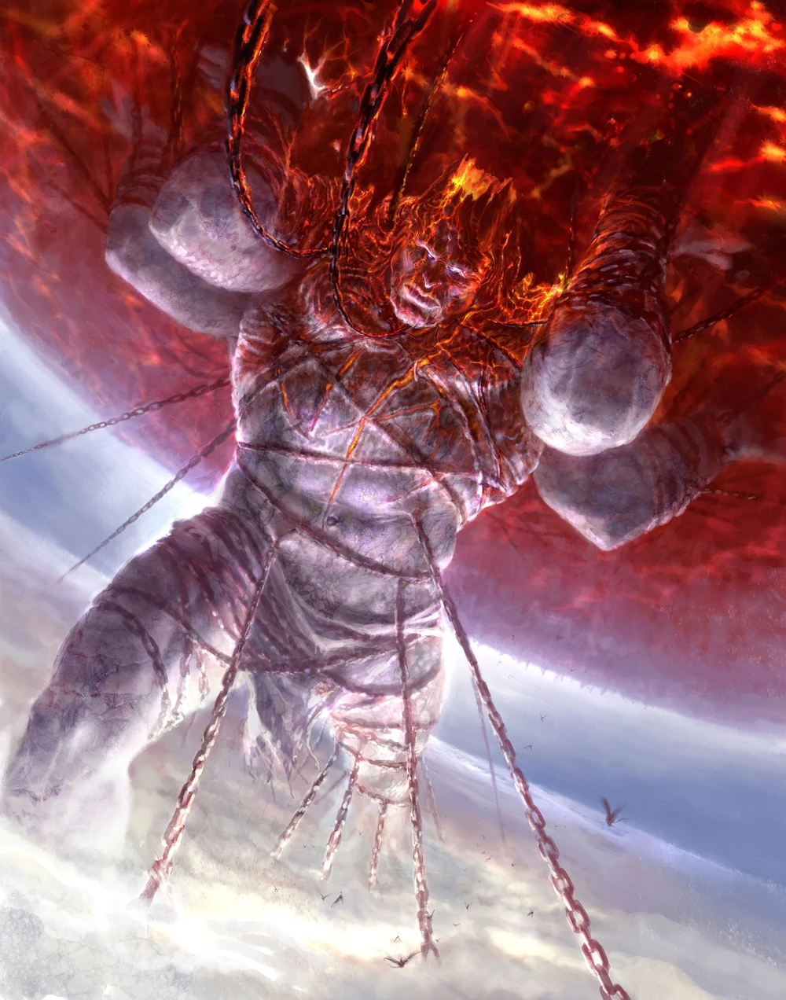
Atlas es otro de los titanes fundamentales de la saga. Condenado a sostener el mundo, simboliza el peso literal y metafórico que cargan las entidades primordiales en el universo de God of War.
Su presencia refuerza la escala épica del conflicto entre dioses y titanes, donde incluso el cuerpo de una sola criatura puede convertirse en parte del paisaje del mundo.
Thor
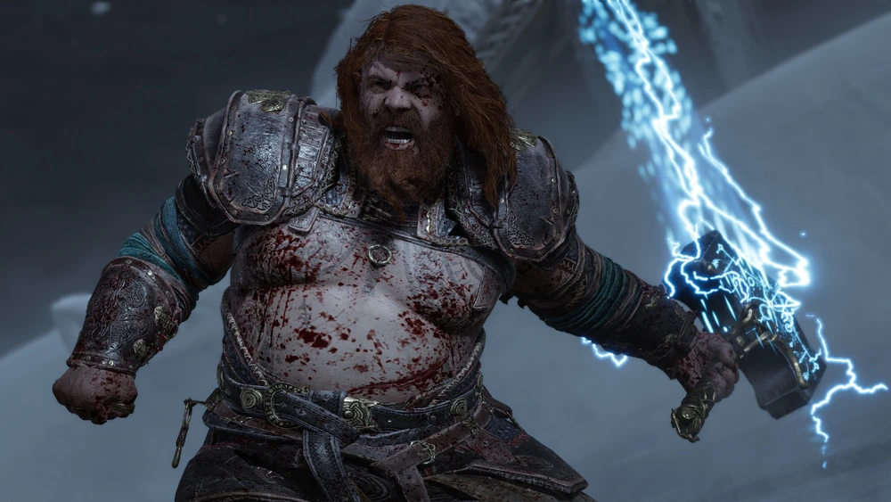
Thor es el dios del trueno y uno de los combatientes más temidos de los reinos nórdicos. Fue criado bajo la influencia de Odin, que lo convirtió en una herramienta de destrucción. Durante mucho tiempo, Thor vivió como arma del reino de Asgard, llevando consigo violencia, adicción y una enorme carga emocional.
Su relación con Kratos está marcada por la brutalidad, pero también por el espejo que ambos representan: dos padres, dos guerreros y dos hombres destrozados por lo que la guerra les hizo.
Odin
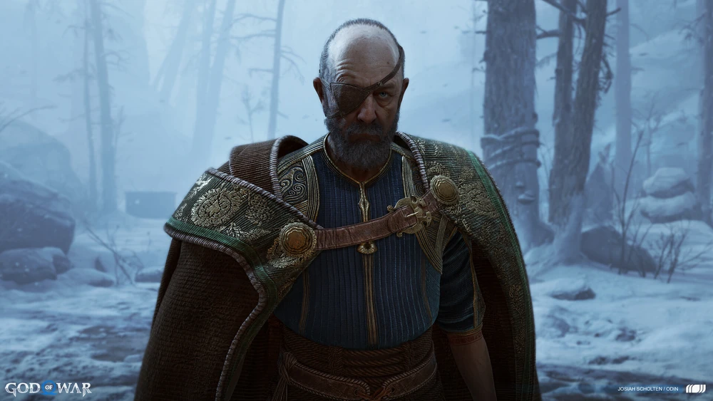
Odin es el gobernante de Asgard y el antagonista principal de la saga nórdica. A diferencia de Zeus, no domina solo mediante la fuerza, sino a través del control de la información, la manipulación y la obsesión por romper el destino antes de que el destino lo destruya a él.
Es un personaje frío, inteligente y peligroso, dispuesto a usar a su propia familia, a los reinos y a cualquiera que le sirva para alcanzar el conocimiento absoluto. Su caída en Ragnarök representa la derrota del control absoluto sobre el miedo y la profecía.
Freya
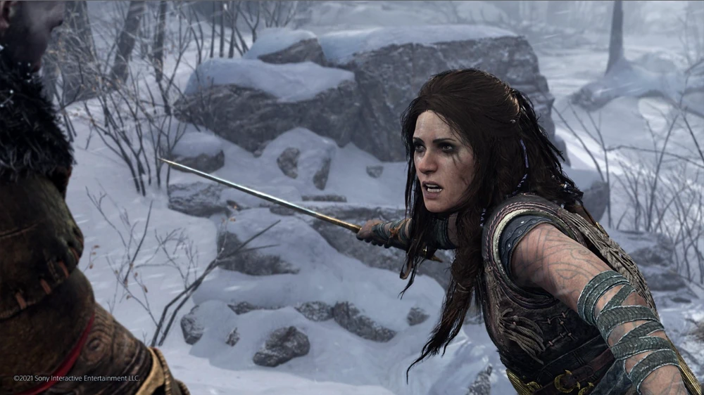
Freya es una diosa y hechicera fundamental de la saga nórdica. Fue aliada de Kratos al inicio, pero la muerte de Baldur la convirtió en una enemiga desgarrada por el dolor. Su historia está marcada por el amor materno, la culpa y la venganza.
Como madre, intentó proteger a su hijo; como diosa, terminó encadenada a una decisión que lo destruyó emocionalmente. Su evolución la vuelve uno de los personajes más trágicos y humanos del mundo nórdico.
Baldur
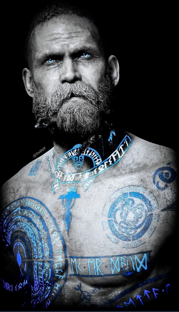
Baldur es el hijo de Freya y uno de los primeros grandes antagonistas de la era nórdica. Su invulnerabilidad, que en teoría debía protegerlo, lo dejó incapaz de sentir dolor o placer, convirtiéndolo en un ser emocionalmente roto.
Su obsesión por romper ese hechizo lo lleva a perseguir a Kratos y Atreus, desatando el conflicto principal de God of War (2018). Su historia es una tragedia sobre la protección mal entendida y la destrucción que puede generar el amor llevado al extremo.
Heimdall
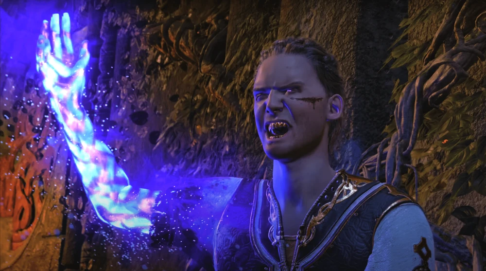
Heimdall es uno de los enemigos más peligrosos de Ragnarök. Su capacidad para anticipar movimientos lo convierte en un guardián casi imposible de engañar. Su arrogancia y su obediencia a Odin lo hacen una figura odiada dentro del conflicto nórdico.
Es un personaje que representa la vigilancia total y la certeza de quien cree ver más que los demás.
Tyr
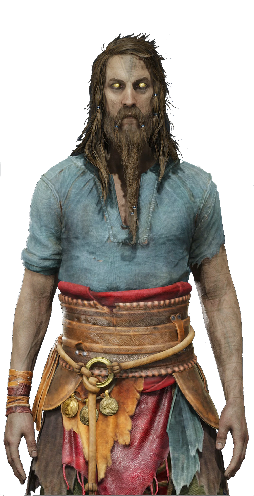
Tyr es el antiguo dios nórdico de la guerra y uno de los personajes más importantes del trasfondo de Ragnarök. Su historia está ligada a la paz, el viaje entre reinos y el intento de usar el conocimiento para evitar una destrucción innecesaria.
Su figura contrasta con la violencia de Odin y Thor. Tyr representa la posibilidad de una guerra diferente, menos destructiva y más consciente.
Magni y Modi
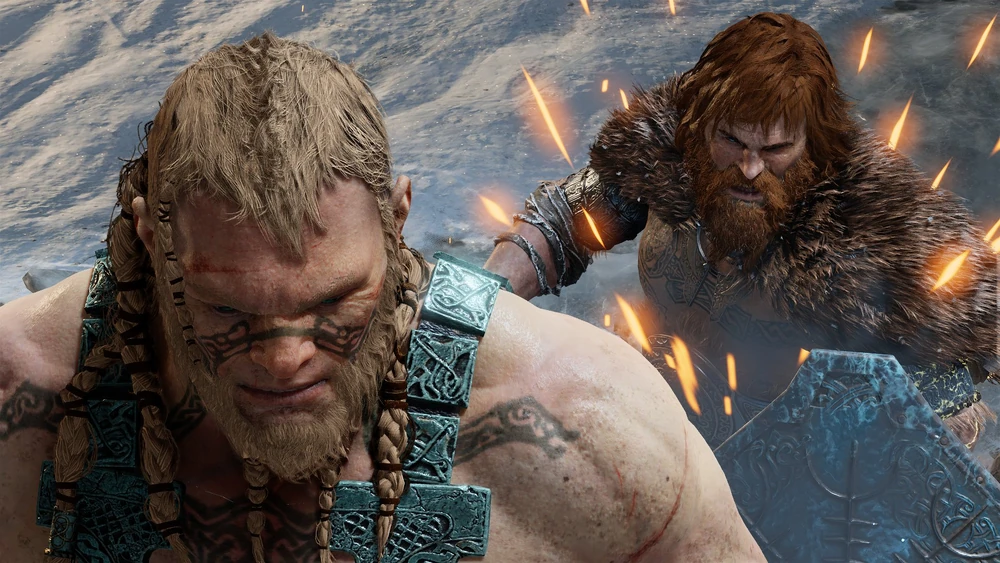
Magni y Modi son hijos de Thor y aparecen como enemigos importantes de la saga nórdica. Ambos fueron criados dentro de la brutalidad de Asgard, y su historia refleja cómo la violencia se hereda y se normaliza en una familia marcada por la guerra.
Su papel no es solo el de rivales físicos. También representan el tipo de legado que deja un dios como Thor dentro de un mundo de obediencia y miedo.
Angrboda
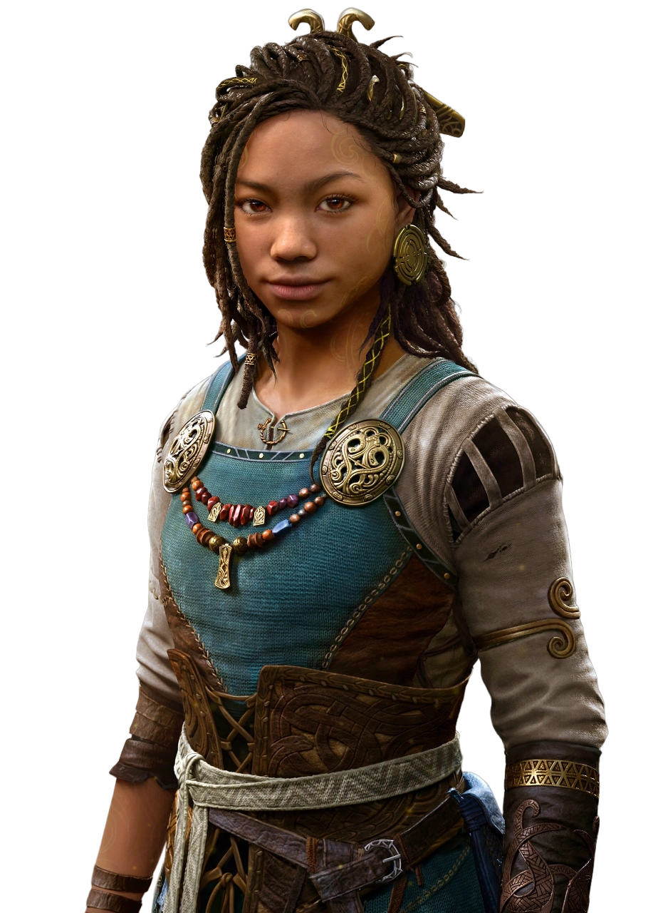
Angrboda es una joven gigante que conoce mucho más sobre el destino de lo que aparenta. Su encuentro con Atreus abre una parte crucial de la historia nórdica, porque le muestra que las profecías no solo anticipan el futuro, sino que también están ligadas a la memoria de los gigantes.
Su vínculo con Atreus aporta una mirada más amplia y más humana al conflicto, ayudando a que el chico comprenda mejor quién es y qué puede llegar a ser.
Mimir

Mimir es la “cabeza más inteligente de los Nueve Reinos” y uno de los aliados más importantes de Kratos y Atreus. Su historia está llena de conocimiento, viajes, errores y una enorme capacidad para explicar la mitología nórdica desde dentro.
Como consejero, narrador y aliado, Mimir aporta humor, sabiduría y contexto histórico, convirtiéndose en una pieza fundamental de la saga moderna.
Brok y Sindri
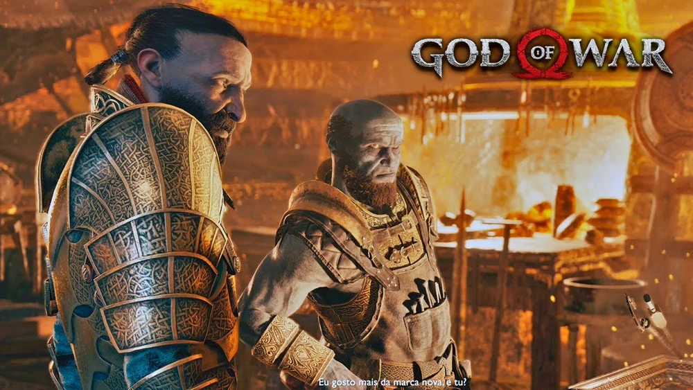
Brok y Sindri son los herreros enanos más importantes de la saga nórdica. Su historia está ligada a la forja, la creación de armas, la ayuda a Kratos y Atreus, y una relación fraterna complicada pero profundamente emotiva.
Ambos representan cómo incluso en medio del conflicto y del caos puede existir una forma de afecto, humor y lealtad real.
Todos los personajes están unidos por una misma idea
En God of War, casi todos los personajes importantes están definidos por el trauma, el destino, la guerra o la familia. Algunos representan el poder, otros la pérdida, otros la venganza y otros la posibilidad de cambiar. Esa mezcla es lo que hace que la saga tenga tanta fuerza y tanta carga emocional.